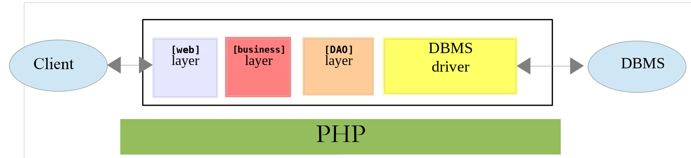
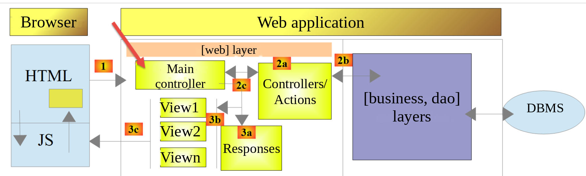
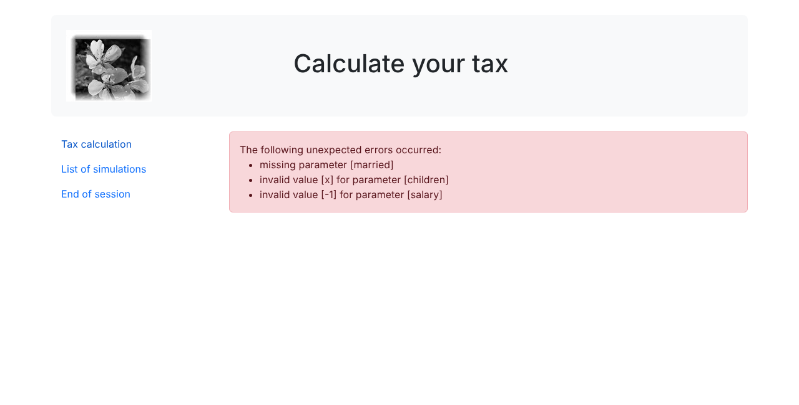
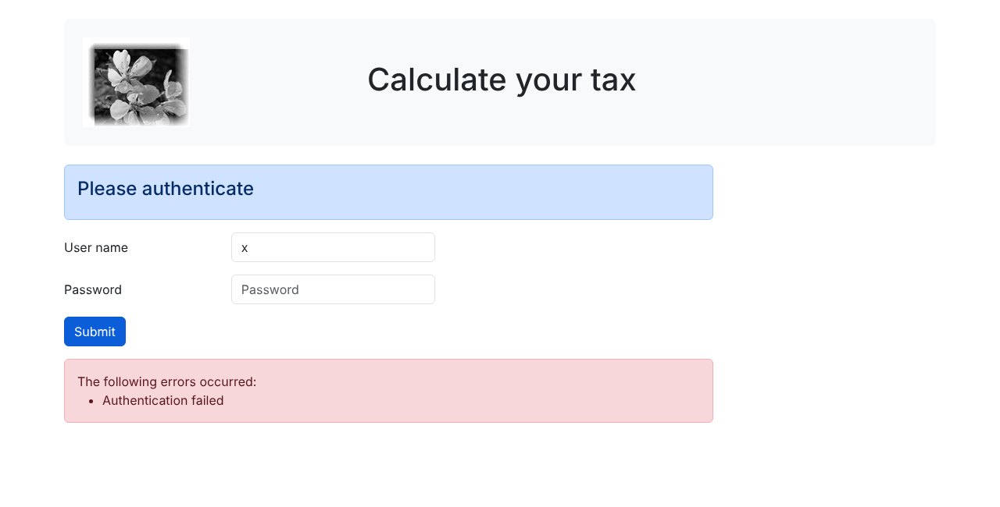
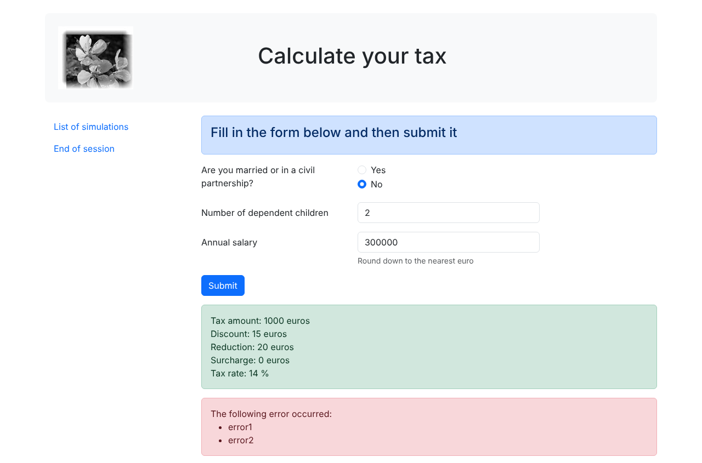
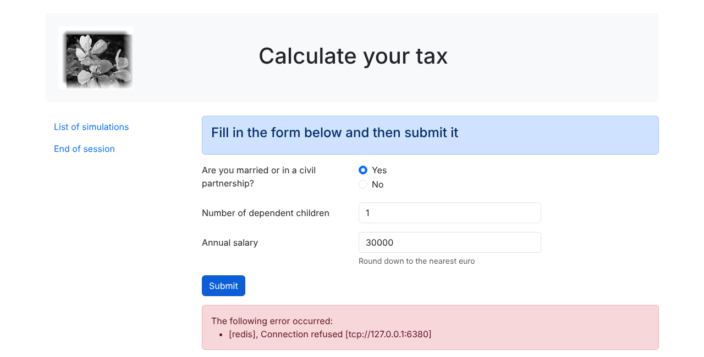
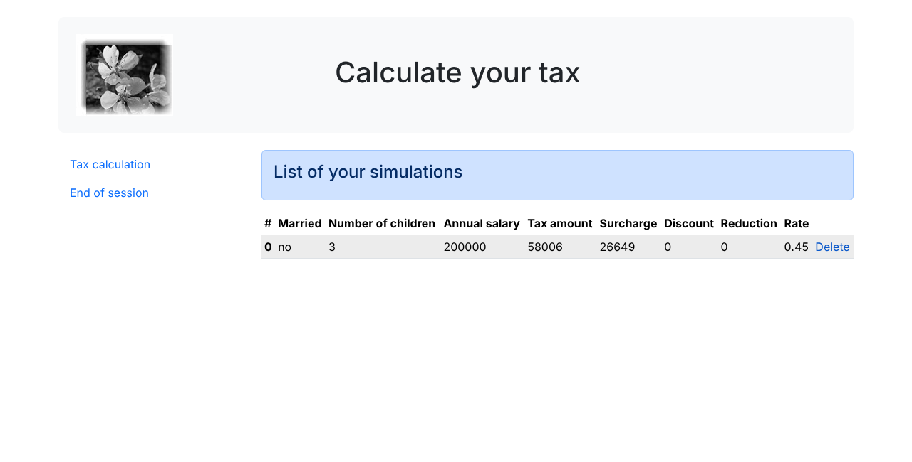
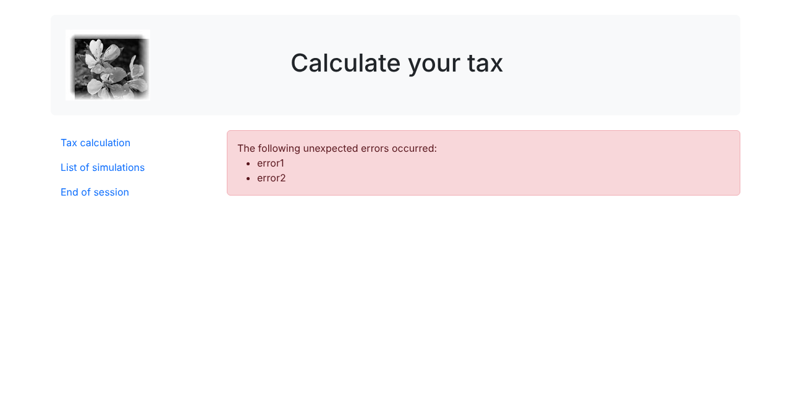
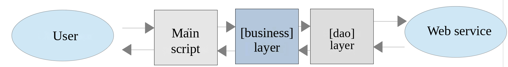
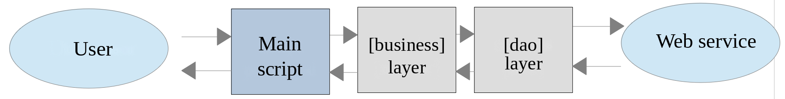

23. Praktische Übung – Version 12
In diesem Kapitel schreiben wir eine Webanwendung nach der MVC-Architektur (Model-View-Controller). Die Anwendung kann Antworten in drei Formaten zurückgeben: JSON, XML und HTML. Zwischen dem, was wir jetzt tun werden, und dem, was wir bisher getan haben, besteht ein deutlicher Komplexitätssprung. Wir greifen die meisten der bisher behandelten Konzepte wieder auf und beschreiben alle Schritte bis zur fertigen Anwendung im Detail.
23.1. MVC-Architektur
Wir setzen das als MVC (Model–View–Controller) bekannte Architekturmodell wie folgt um:

Die Verarbeitung einer Client-Anfrage verläuft wie folgt:
- 1 - Anfrage: Die Parameter der angeforderten URL haben die Form [http://machine:port/context/main.php?action=anAction¶m1=v1¶m2=v2&…]. Der [Main controller] verwendet den Parameter [action] der URL, um die Anfrage an den sekundären Controller zu „routen“, der für die Verarbeitung dieser Aktion zuständig ist. Der Rest der URL und [param1=v1¶m2=v2&…] besteht aus optionalen Parametern, die an die Aktion übergeben werden. Das C in MVC ist die Zeichenfolge [Main controller, Controller / Action]. Wenn kein Controller die angeforderte Aktion verarbeiten kann, antwortet der Server, dass die angeforderte Aktion ungültig ist;
- 2 - Verarbeitung:
- Die ausgewählte Aktion [2a] kann die Parameter verwenden, die ihr von [Main controller] übergeben werden. Diese Parameter können aus mehreren Quellen stammen: dem Pfad [/param1/param2/…] der URL, den Parametern [param1=v1¶m2=v2] der URL oder den Parametern, die der Browser mit seiner Anfrage übermittelt;
- Bei der Verarbeitung der Benutzeranfrage kann die Aktion die Schichten [business] und [2b] benötigen. Sobald die Anfrage des Clients verarbeitet wurde, kann sie verschiedene Antworten auslösen. Ein klassisches Beispiel: eine Fehlerantwort, wenn die Anfrage nicht korrekt verarbeitet werden konnte, andernfalls eine Bestätigungsantwort;
- [Controller / Action] gibt ihre Antwort [2c] zusammen mit einem Statuscode an den Hauptcontroller zurück. Diese Statuscodes stehen eindeutig für den aktuellen Zustand der Anwendung. Es handelt sich entweder um Erfolgs- oder um Fehlercodes;
- 3 - Antwort:
- Je nachdem, ob der Client eine Antwort im Format JSON, XML oder HTML angefordert hat, instanziiert der [Main controller] den passenden Antworttyp ([3a]) und weist ihn an, die Antwort an den Client zu senden. Der [Main controller] übergibt ihm die Antwort und den Statuscode der ausgeführten [Controller / Action];
- Ist die gewünschte Antwort vom Typ JSON oder XML, formatiert die ausgewählte Antwort die ihr übergebene Antwort der [Controller / Action] und sendet sie über [3c]. Der Client, der diese Antwort verarbeiten kann, kann ein PHP-Konsolenskript oder ein in eine HTML-Seite eingebettetes JavaScript-Skript sein;
- Ist die gewünschte Antwort vom Typ HTML, wählt die ausgewählte Antwort anhand des ihr übergebenen Statuscodes eine der HTML-Views [3b] ([View1], [View2]…) aus. Das ist das V in MVC. Jeder Statuscode entspricht genau einer View. Diese View V zeigt die Antwort der ausgeführten [Controller / Action] an. Sie formatiert die Daten dieser Antwort mit HTML, CSS und JavaScript. Diese Daten werden als View-Modell bezeichnet. Es ist das „M“ in MVC. Der Client ist meist ein Webbrowser.
Klären wir nun das Verhältnis zwischen der Web-Architektur MVC und der Schichtenarchitektur. Je nachdem, wie das Modell definiert wird, können diese beiden Konzepte miteinander zusammenhängen oder auch nicht. Betrachten wir eine einschichtige Webanwendung mit MVC:

Im obigen Beispiel enthält jede Komponente [Controller / Action] Teile der Schichten [business] und [dao] . Die [web]-Schicht hat zwar eine MVC-Architektur, die Anwendung als Ganzes hat jedoch keine Schichtenarchitektur. Hier gibt es nur eine einzige Schicht, die alles erledigt.
Betrachten wir nun eine mehrschichtige Web-Architektur:

Die [web]-Schicht kann auch ohne das MVC-Modell implementiert werden. Wir haben dann eine mehrschichtige Architektur, aber die Web-Schicht setzt das MVC-Modell nicht um.
In der .NET-Welt kann die [web]-Schicht beispielsweise mit ASP.NET Core MVC implementiert werden, was zu einer Schichtenarchitektur mit einer [web]-Schicht vom Typ MVC führt. Anschließend können wir diese ASP.NET-Core-MVC-Schicht durch eine ASP.NET-Core-[Razor Pages]-Schicht ersetzen, während der Rest (Geschäftslogik, DAO, Treiber) unverändert bleibt. Wir haben dann eine Schichtenarchitektur mit einer [web]-Schicht, die nicht mehr vom Typ MVC ist.
Bei MVC haben wir festgelegt, dass das Modell M das der View V ist, also die Menge der von der View V angezeigten Daten. Es gibt noch eine andere Definition des Modells M für MVC:

Viele Autoren betrachten das, was rechts von der Schicht [web] liegt, als das Modell M von MVC. Um Mehrdeutigkeiten zu vermeiden, können wir unterscheiden:
- das Domänenmodell, wenn wir alles rechts von der Schicht [web] meinen;
- das View-Modell, wenn wir die von einer View V angezeigten Daten meinen.
23.2. Projektstruktur
Für dieses Projekt verwenden wir eine Verzeichnisstruktur, die das MVC-Modell widerspiegelt. In [VS Code] enthält der Ordner [scripts-web/tax/version-12] die folgenden Elemente:
- [main.php] ist der Hauptcontroller unseres MVC-Modells. Er ist das C in MVC;
- der Ordner [Controllers] enthält die sekundären Controller. Jeder von ihnen behandelt eine bestimmte Aktion. Diese Aktion wird in der URL angegeben, zum Beispiel […/main.php?action=authenticate-user]. Anhand dieser Aktion wählt der Hauptcontroller [main.php] einen sekundären Controller aus – hier [AuthenticateUserController] –, der die angeforderte Aktion behandelt. Diese Controller sind ebenfalls Teil des C in MVC;
- der Ordner [Responses] enthält die Klassen, die für das Senden der Antwort an den Client zuständig sind. Es gibt eine Klasse für jeden gewünschten Antworttyp:
- [JsonResponse]: für eine JSON-Antwort;
- [XmlResponse]: für eine Antwort vom Typ XML;
- [HtmlResponse]: für eine HTML-Antwort;
- Der Ordner [Views] enthält die HTML-Views, wenn eine HTML-Antwort gewünscht ist. Das ist das V in MVC. Sie werden von der Klasse [HtmlResponse] aktiviert, die ihnen die anzuzeigenden Daten übergibt. Diese Daten sind das View-Modell. Gemäß der für das M gewählten Terminologie können diese Daten das M von MVC sein;
- der Ordner [Tests] enthält Testversionen der Views, mit denen sich deren visuelles Erscheinungsbild anpassen lässt;
- der Ordner [Entities] enthält Klassen und Enumerationen, die von den verschiedenen Controllern verwendet werden;
- der Ordner [Data] enthält die Konfigurationsdatei [config.json] und die Logdatei [logs.txt]. Wie in den vorherigen Versionen verhindert die Datei [.htaccess] aus Version 8, dass [Apache] seine Dateien ausliefert: Die Konfiguration enthält Passwörter.
Der PHP-7-Kurs hat die Klassen der Schichten [business] und [dao] (Ordner [Model]) sowie die Hilfsklassen (Ordner [Utilities]) kopiert. Wir kopieren sie nicht: Wie in den vorherigen Versionen werden diese Klassen aus den Ordnern der Versionen 5, 8, 9 und 11 geladen, in denen sie ursprünglich geschrieben wurden.
Anhand dieser Verzeichnisstruktur können wir den Verarbeitungsablauf für eine vom Client angeforderte Aktion beschreiben:
- [main.php] empfängt die Anfrage;
- nach einigen Vorabprüfungen (gehört die Aktion zu den zulässigen Aktionen?) leitet er die Anfrage an den sekundären Controller weiter, der für die Verarbeitung dieser Aktion zuständig ist;
- der sekundäre Controller erledigt seine Aufgaben. Dabei kann er die Schichten [business] und [dao] sowie die Entitäten im Ordner [Entities] benötigen. Er gibt seine Antwort an den primären Controller [main.php], der ihn aktiviert hat, zurück;
- je nach dem vom Client angeforderten Antworttyp [JSON, XML, HTML] aktiviert der Hauptcontroller [main.php] eine der Antworten aus dem Ordner [Responses];
- Die Antworten [JsonResponse, XmlResponse] senden die JSON- bzw. XML-Antwort an den Client;
- Die Antwort [HtmlResponse] verwendet eine der Views aus dem Ordner [Views] , um eine HTML-Antwort an den Client zu senden;
- die verschiedenen Komponenten greifen auf die Klasse [Logger] aus Version 9 zu, um Logs in die Datei [Data/logs.txt] zu schreiben. Folgendes wird protokolliert:
- die angeforderte Aktion;
- die Antwort ihres Controllers. Sie wird unabhängig vom angeforderten Typ [JSON, XML, HTML] im JSON-Format aufgezeichnet;
- bei einem schwerwiegenden Fehler (HTTP-Status 500 Internal Server Error) sendet der Hauptcontroller [main.php] mit der Klasse [SendAdminMail] aus Version 9 eine E-Mail an den Administrator.
23.3. Aktionen der Anwendung
Der Client sendet die auszuführende Aktion als Parameter [action] in der URL [/main.php?action=xxx] an den Webserver. Der PHP-7-Kurs führte die zulässigen Aktionen in der Konfigurationsdatei auf, jeweils zusammen mit dem Namen ihrer Controller-Klasse. Wir verwenden eine Enumeration (PHP 8.1), die Enumeration [Action] aus dem Ordner [Entities]:
Kommentare
- Zeile 9: Die Enumeration [Action] ist eine „backed“ Enumeration: Jeder ihrer Fälle hat einen Wert, hier vom Typ [string]. Enumerationen sind uns im Kapitel über Klassen begegnet;
- Zeile 11: [init-session] startet eine Sitzung mit Steuerberechnungssimulationen. Diese Aktion legt den Typ der gewünschten Antworten fest: [JSON, XML, HTML];
- Zeile 12: Sobald der Sitzungstyp festgelegt ist, muss sich der Client mit der Aktion [authenticate-user] authentifizieren. Solange der Client nicht authentifiziert ist, sind alle anderen Aktionen außer [init-session] untersagt;
- Zeile 13: Nach der Authentifizierung kann der Client mit der Aktion [calculate-tax] eine Reihe von Steuerberechnungen durchführen;
- Zeile 14: Der Kunde kann jederzeit mit der Aktion [list-simulations] die Liste der von ihm durchgeführten Simulationen anfordern;
- Zeile 15: Mit der Aktion [delete-simulation] kann er einige davon löschen;
- Zeile 16: Der Kunde beendet seine Simulationssitzung mit der Aktion [end-session]. Ab diesem Moment muss er sich erneut anmelden, wenn er die Anwendung nutzen möchte;
- Zeile 17: In der HTML-Anwendung zeigt die Aktion [display-tax-calculation] das Formular zur Steuerberechnung an;
- Zeilen 20–23: Eine Enumeration kann Methoden haben. Innerhalb einer Methode bezeichnet [$this] das Enumerationselement, für das die Methode aufgerufen wird. Die Methode [requiresSessionType] gibt an, ob die Aktion nur ausgeführt werden kann, wenn der Sitzungstyp bekannt ist: Das gilt für alle Aktionen außer [init-session]. Die Fälle einer Enumeration sind eindeutige Objekte: Sie werden mit dem Operator [===] verglichen;
- Zeilen 26–32: Die Methode [requiresAuthentication] bestimmt, ob die Aktion nur von einem authentifizierten Benutzer ausgeführt werden kann: Das gilt für alle Aktionen außer [init-session] und [authenticate-user]. Der Ausdruck [match] erlaubt innerhalb desselben Zweigs mehrere, durch Kommas getrennte Werte.
Diese Regeln, die im PHP-7-Kurs noch im Hauptcontroller geschrieben waren, sind nun zusammen mit den Aktionsdefinitionen gebündelt.
23.4. Konfiguration der Webanwendung
Die Anwendung wird durch die folgende JSON-Datei [Data/config.json] konfiguriert:
Kommentare
- Zeile 2: die JSON-Datei, die die MySQL-Datenbank [dbtaxes-2019] beschreibt, die zu Version 8 gehört. Der Pfad ist relativ zum Ordner [version-12];
- Zeilen 3–33: die PHP-Dateien der Anwendung. Diese enthalten zunächst die bereits geschriebenen Klassen:
- die Entitäten [TaxException, TaxAdminData, Database] und die Klasse [Utilities] aus Version 5;
- die Schichten [dao] und [business] aus den Versionen 8 und 9;
- die Hilfsklassen [Logger] und [SendAdminMail] aus Version 9 sowie [XmlUtilities] aus Version 11;
- und die Klassen aus Version 12, die wir nun vorstellen. Die PHP-Datei aus dem Kurs 7 enthielt außerdem die absoluten Pfade zu Drittanbieter-Bibliotheken ([C:/myprograms/laragon-lite/www/vendor/autoload.php]): Der Klassenlader von [Composer] wird jetzt direkt von [main.php] über einen relativen Pfad geladen;
- Zeilen 34–39: der Benutzer, der die Anwendung verwenden darf;
- Zeilen 40–48: die E-Mail-Kontaktdaten des Anwendungsadministrators. Die E-Mail wird an den Server [Mailpit] gesendet, der auf Port 1025 lauscht (siehe Version 9);
- Zeile 49: der Pfad zur Logdatei;
- Zeilen 50–54: die Angaben zum Server [Redis], der als Speicher für den Gültigkeitsbereich [application] dient (siehe Version 10);
- Zeilen 55–59: Zuordnungen [HTML view => array of the status codes leading to this view]. Sie werden etwas weiter unten beschrieben;
- Zeile 60: Die View [view-errors.php] wird in einer HTML-Sitzung immer dann angezeigt, wenn ein ungewöhnlicher Fehler auftritt:
- Eine Anwendung wie JSON oder XML wird in der Regel von einem programmierten Client abgefragt. Der Client übergibt dem Server Parameter, die fehlen oder fehlerhaft sein können. Die Controller behandeln diese Fälle und geben Fehlercodes an den Client zurück. Alle möglichen Fehlerfälle müssen behandelt werden;
- Bei einer HTML-Anwendung ist es etwas anders. Bei normaler Nutzung verwendet die Webanwendung nur eine Teilmenge der möglichen Anwendungsfälle der JSON- und XML-Clients. Nehmen wir ein Beispiel: Die Aktion [calculate-tax] erwartet drei gepostete Parameter (per POST gesendet): [married, children, salary]. Mit einem JSON-Client, der die manuelle Eingabe der URL erlaubt, können Sie die Aktion [calculate-tax] per GET statt per POST anfordern oder per POST ohne gepostete Parameter, obwohl drei erforderlich sind, und so weiter. Der JSON-Server muss alle diese Fälle behandeln. Bei einer Webanwendung wird die Aktion [calculate-tax] aus einem Webformular angefordert, in dem keiner der beiden vorherigen Fälle möglich ist: Die Aktion [calculate-tax] wird per POST und mit allen drei Parametern [married, children, salary] aufgerufen. Der Benutzer kann jedoch bestimmte Fehler reproduzieren, indem er URL-Werte manuell in den Browser eingibt. Aus Sicherheitsgründen muss auch dieses Szenario behandelt werden;
- die View [view-errors.php] wird immer dann angezeigt, wenn ein sekundärer Controller einen Statuscode zurückgibt, der mit der Webanwendung nicht vereinbar ist, d. h. einen Statuscode, der nicht im [views]-Schlüssel der Konfigurationsdatei vorkommt. Wir entscheiden uns aus didaktischen Gründen für diese Lösung. Eine andere mögliche Option wäre, die aktuell im Browser des Clients angezeigte View erneut anzuzeigen, sodass der Benutzer den Eindruck hat, der Server reagiere nicht auf seine von Hand erstellten URL-Anfragen.
Im Vergleich zur Konfigurationsdatei des PHP-7-Kurses sind die Schlüssel [rootDirectory] (das Wurzelverzeichnis ist jetzt [main.php]), [actions] (ersetzt durch die Enumeration [Action]) und [types] (ersetzt durch die weiter unten vorgestellte Enumeration [ResponseType] ) entfallen.
23.5. Werkzeuge und Bibliotheken
23.5.1. Das Werkzeug [curl]
Der PHP-7-Kurs verwendete das grafische Werkzeug [Postman] , um die verschiedenen URL-Bestandteile der Webanwendung abzufragen. Wir verwenden das im Kapitel über Webservices eingeführte Kommandozeilenwerkzeug [curl]. Es erlaubt uns:
- beliebige URLs zu verwenden: Sie werden von Hand erstellt;
- den Webserver per GET, POST, PUT, OPTIONS … abzufragen (Optionen [-X] und [-d]);
- die Parameter für GET (in der URL) oder POST (Optionen [-d] und [--data-urlencode]) anzugeben;
- die HTTP-Header der Anfrage (Option [-H]) zu setzen;
- eine Antwort im Format JSON, XML oder HTML zu erhalten;
- Zugriff auf die HTTP-Header der Antwort (Option [-i]) zu haben;
- das Sitzungs-Cookie wie ein Browser zu verwalten: Die Option [-c cookies.txt] speichert die vom Server gesendeten Cookies in der Datei [cookies.txt], während die Option [-b cookies.txt] sie an den Server zurücksendet.
Da wir die angeforderten URLs von Hand erzeugen, können wir alle möglichen Fehlerszenarien testen und sehen, wie der Server reagiert. Denken Sie daran, dass Sie in einem [PowerShell]-Terminal [curl.exe] statt [curl] eingeben müssen. Alle Befehle in diesem Kapitel werden in einem Terminal eingegeben, das in einem beliebigen Arbeitsverzeichnis geöffnet ist, in dem [curl] die Datei [cookies.txt] erstellt.
Um den Parameter [married] zu posten, verwenden wir die Option [--data-urlencode "married=yes"], die den Namen und den Wert des Parameters bei Bedarf URL-kodiert. Die Parameternamen ([married], [number]...) enthalten keine Umlaute oder Akzente, daher können wir sie in der URL unverändert schreiben.
23.5.2. Die Bibliothek Symfony / Serializer
Der PHP-7-Kurs verwendete die Bibliothek [Symfony / Serializer], um Serverantworten, die [Simulation]-Objekte enthalten können, in JSON und XML zu serialisieren. Sie hatte zwei Vorteile: dieselbe API für JSON und XML sowie die Serialisierung von Objekten mit privaten Attributen, die über Getter bereitgestellt werden.
Wir verwenden sie in dieser Version nicht, obwohl sie für den Kurs im Ordner [vendor] installiert ist:
- unsere Klasse [Simulation] ist eine [readonly]-Klasse mit öffentlichen Attributen (siehe den folgenden Absatz). Die Funktion [json_encode] serialisiert die öffentlichen Attribute eines Objekts direkt: Die JSON-Serialisierung erfordert keine Bibliothek mehr;
- für XML steht uns die Klasse [XmlUtilities] aus Version 11 zur Verfügung, die XML-Dokumente im selben Format wie die aus Version 11 erzeugt, die XML-Clients bereits verarbeiten können. Man muss ihr lediglich ein Array übergeben, nachdem man die [Simulation]-Objekte in assoziative Arrays umgewandelt hat;
- der Server muss JSON oder XML nie in Objekte deserialisieren, was der andere im PHP-7-Kurs hervorgehobene Vorteil war.
Die Bibliothek [Symfony / Serializer] würde hier also nur eine weitere Abhängigkeit hinzufügen. Sie bleibt eine gute Wahl, wenn Dokumente in typisierte Objekte deserialisiert oder viele verschiedene Formate verarbeitet werden müssen.
23.6. Entitäten der Anwendung
Der Ordner [Entities] enthält zwei Enumerationen, [Action] (bereits vorgestellt) und [ResponseType] (wird zusammen mit den Serverantworten vorgestellt), sowie zwei Klassen. Die Klasse [Simulation] kapselt die Elemente einer Steuerberechnungssimulation:
Kommentare
- Zeile 9: Die Klasse ist [readonly] (PHP 8.2): Alle ihre Attribute sind schreibgeschützt. Eine Simulation ist ein unveränderliches Objekt: Einmal konstruiert, ändert sie sich nicht;
- Zeilen 13–24: Die Attribute werden über die Parameter des Konstruktors deklariert und initialisiert (PHP 8.0). Sie sind typisiert: [string] für den Familienstand, [int] für die übrigen Parameter und Beträge sowie [float] für den Steuersatz;
- die Attribute sind öffentlich: Da sie schreibgeschützt sind, müssen sie nicht mehr durch Getter geschützt werden. Die PHP-7-Klasse [Simulation] war von der Klasse [BaseEntity] abgeleitet, hatte acht untypisierte Attribute [protected], und acht Getter.
Die zweite Klasse, [ControllerResult], stellt das Ergebnis dar, das ein sekundärer Controller an den Hauptcontroller zurückgibt:
- Zeile 13: der HTTP-Statuscode der an den Client zu sendenden Antwort;
- Zeile 15: der Zustand der Anwendung nach Ausführung der Aktion;
- Zeile 17: die Antwort selbst. Ihr Typ hängt von der Aktion ab: eine Meldung, eine Liste von Fehlermeldungen, eine Simulation oder eine Liste von Simulationen. Der Typ [mixed] (PHP 8.0) akzeptiert jeden beliebigen Wert;
- Zeile 19: die HTTP-Header, die der Antwort hinzugefügt werden sollen. Dies ist ein optionaler Parameter.
Im PHP-7-Kurs gaben die Controller das Array [[$statusCode, $status, $content, $headers]] zurück. Ein Objekt mit benannten und typisierten Attributen ist sicherer: Bei der Reihenfolge der Elemente kann man sich nicht mehr vertun.
23.7. Die Hilfsklassen der Anwendung
Die Anwendung verwendet drei bereits beschriebene Hilfsklassen:
- die Klasse [Logger] aus Version 9 ermöglicht es, Ereignisse in eine Textdatei zu protokollieren;
- die Klasse [SendAdminMail] aus Version 9 ermöglicht es, eine E-Mail an den Anwendungsadministrator zu senden;
- die Klasse [XmlUtilities] aus Version 11 erzeugt das XML-Dokument aus einem Array.
23.8. Die [business]- und [dao]-Schichten

Die Klassen und Schnittstellen der Schichten [business] und [dao] wurden alle in früheren Versionen definiert und verwendet:
Klasse | Rolle |
TaxException | Die Klasse der Ausnahmen, die von der [dao]-Schicht ausgelöst werden. Version 5, Ordner [Entities] |
InterfaceServerDao | Schnittstelle, die von der [dao]-Schicht des Servers implementiert wird. Version 8, Ordner [Dao] |
ServerDao | Implementierung der Schnittstelle [InterfaceServerDao]: Die Steuerdaten werden aus der Datenbank gelesen. Version 8 |
ServerDaoWithSession | Von [ServerDao] abgeleitete Klasse: Die Steuerdaten können dem Konstruktor übergeben werden. Version 9, Ordner [Dao] |
InterfaceServerBusiness | Schnittstelle, die von der [business]-Schicht des Servers implementiert wird. Version 8, Ordner [Business] |
ServerBusiness | Implementierung der Schnittstelle [InterfaceServerBusiness]: Steuerberechnung. Version 8 |
Die derzeit entwickelte Anwendung greift also in großem Umfang auf bereits vorgestellte und verwendete Elemente zurück:
- die Schichten [business] und [dao];
- die Hilfsklassen [Logger], [SendAdminMail], und [XmlUtilities];
- die Entitäten [TaxException, TaxAdminData, Database].
Wir konzentrieren uns auf die [web]-Schicht der Anwendung:

23.9. Der Hauptcontroller [main.php]
23.9.1. Einführung
Der Hauptcontroller [main.php] wird durch die Datei [Data/config.json] konfiguriert. Rufen wir uns seine Stellung in unserer MVC-Architektur in Erinnerung:

Der Hauptcontroller [main.php] ist das erste Element der MVC-Architektur, das die Anfrage des Clients verarbeitet. Er hat mehrere Aufgaben:
- Zunächst führt er grundlegende Prüfungen durch:
- Existiert seine Konfigurationsdatei und ist sie gültig?
- Er lädt alle Abhängigkeiten des Projekts. Dazu gehört das Laden aller Komponenten der MVC-Architektur;
- Wurde die angeforderte Aktion angegeben? Wenn ja, ist sie gültig?
- Wenn die angeforderte Aktion gültig ist, wählt er [2a] – den sekundären Controller, der sie verarbeitet – aus und übergibt ihm die benötigten Informationen: die Anwendungskonfiguration, die HTTP-Anfrage und die Sitzung;
- er ruft [2c] die Antwort des sekundären Controllers ab. Je nach dem vom Client angeforderten Typ (JSON, XML, HTML) der Antwort wählt er [3a] die Antwort (JsonResponse, XmlResponse, HtmlResponse) aus, die für das Senden der Antwort an den Client zuständig ist, und übergibt ihr alle benötigten Informationen (die HTTP-Anfrage, die Sitzung, die Anwendungskonfiguration und die Antwort des sekundären Controllers).
23.9.2. [main.php] - 1
Der Anfang des primären Controllers [main.php] sieht wie folgt aus:
Kommentare
- Zeilen 10–12: Der Hauptcontroller verwendet die folgenden Klassen der Symfony-Bibliothek [HttpFoundation]:
- [Request]: die gerade verarbeitete HTTP-Anfrage;
- [Response]: die HTTP-Antwort an den Client;
- [Session]: die Sitzung der Webanwendung;
- Zeile 15: Von PHP erkannte Fehler werden nicht in das an den Client gesendete Dokument aufgenommen: Sie würden die JSON- oder XML-Antworten beschädigen. Sie bleiben im Fehlerlog des Webservers protokolliert (Datei [error.log] von Apache). Während der Entwicklung kann diese Zeile auskommentiert werden: Die PHP-Fehler erscheinen dann in den Antworten, die [curl] oder der Browser erhält. Das erleichtert die Fehlersuche. Das PHP-7-Skript änderte außerdem die Fehlerberichtsstufe mit [error_reporting(E_ALL && !E_WARNING && !E_NOTICE)], einem Ausdruck, der übrigens falsch war (er erforderte die bitweisen Operatoren [&] und [~]): Wir wollen im Gegenteil keine Fehler ignorieren;
- Zeile 18: das Wurzelverzeichnis der Anwendung, also das des Skripts [main.php]. Die Pfade in der Konfigurationsdatei sind relativ zu diesem Verzeichnis. Die Konstante ist im Namensraum [Application] definiert: Sie ist daher für Klassen in diesem Namensraum sichtbar, insbesondere für den Controller, der die Steuer berechnet;
- Zeile 20: der Pfad zur Konfigurationsdatei;
- Zeile 23: Der Klassenlader von [Composer] wird geladen, wodurch die Symfony- und Predis-Klassen verfügbar werden. Er wird vor dem Lesen der Konfiguration geladen: Die Fehlerantwort, die bei einer fehlgeschlagenen Konfiguration gesendet wird, verwendet die Symfony-Klasse [Response]. Das PHP-7-Skript verwendete hier einen absoluten Pfad;
- Zeilen 26–29: Die Konfigurationsdatei wird gelesen. Wenn sie nicht existiert oder nicht gelesen werden kann, wird über die Funktion [sendConfigError] eine Fehlerantwort mit dem Status [131] an den Client gesendet;
- Zeilen 30–34: Das JSON der Konfigurationsdatei wird dekodiert. Mit der Option [JSON_THROW_ON_ERROR] löst die Funktion [json_decode] eine Ausnahme [JsonException] aus, wenn das JSON ungültig ist. Anschließend wird eine Fehlerantwort mit dem Status [132] gesendet. Ab PHP 8.0 darf die Klausel [catch] die Ausnahmevariable weglassen, wenn sie nicht verwendet wird: [catch (\JsonException)];
Hier haben wir eine vorhandene und syntaktisch korrekte Konfigurationsdatei. Es müsste außerdem geprüft werden, ob die erwarteten Schlüssel in dieser Datei tatsächlich vorhanden sind. Wir betrachten dies als Teil der normalen Debugging-Arbeit des Entwicklers.
Die Funktion [sendConfigError] ist am Ende des Skripts definiert:
- Zeile 124: Der Rückgabetyp [never] (PHP 8.1) gibt an, dass die Funktion die Kontrolle nie an den Aufrufer zurückgibt; sie endet immer mit [exit] oder einer Ausnahme. Ein Code-Analysewerkzeug wie die Erweiterung [PHP Intelephense] von [VS Code] weiß dann, dass der Code nach einem Aufruf von [sendConfigError] nur ausgeführt wird, wenn die Konfiguration gelesen werden konnte;
- Zeile 126: Alle von der Webanwendung erzeugten Antworten haben drei Schlüssel:
- [action]: die vom Client angeforderte Aktion (hier unbekannt);
- [status]: der Zustand der Anwendung nach Ausführung dieser Aktion;
- [response]: die Antwort des Webservers;
- Zeile 127: Da die Klassen der Anwendung noch nicht geladen wurden, wird direkt eine Symfony-Antwort mit dem Status [500 Internal Server Error] erstellt;
- Zeile 128: Die Antwort ist ein in UTF-8 kodiertes JSON-Dokument;
- Zeile 129: Die Antwort wird an den Client gesendet.
23.9.3. [curl]-Tests - 1
Wir prüfen das Verhalten des Servers, wenn die Konfigurationsdatei fehlt oder fehlerhaft ist. Benennen wir [Data/config.json] in [Data/config2.json] um und fordern dann die URL des Hauptcontrollers an:
- Zeile 1: Die Option [-i] weist [curl] an, die HTTP-Header der Antwort anzuzeigen;
- Zeile 2: Der Server hat den Statuscode [500 Internal Server Error] zurückgegeben;
- Zeile 8: Die Antwort ist ein JSON-Dokument;
- Zeile 10: das JSON-Dokument der Antwort. Es ist tatsächlich das erwartete.
Benennen wir die Datei wieder in [config.json] um und machen sie dann syntaktisch fehlerhaft, zum Beispiel indem wir alles nach der zweiten Zeile löschen. Die HTTP-Header zeigen wir nicht mehr an:
Dieser erste Test hat uns gezeigt, dass wir jede Art von Anfrage an den getesteten Server senden können und die vollständige Antwort erhalten: die HTTP-Header und das darauf folgende Dokument. Vergessen wir nicht, den Inhalt der Datei [config.json] wiederherzustellen.
23.9.4. [main.php] – 2
Wir setzen nun unsere Analyse des Hauptcontrollers [main.php] fort:
Kommentare
- Zeilen 37–39: Wir binden alle Abhängigkeiten der Anwendung ein. Diesem Code sind wir bereits mehrfach begegnet;
- Zeile 42: Alle Informationen der Client-Anfrage sind im Symfony-Objekt [Request] gekapselt;
- Zeilen 44–45: Es wird eine neue Sitzung gestartet oder die bestehende Sitzung wiederhergestellt, wenn der Client ein Sitzungs-Cookie gesendet hat. Die Sitzung wird gestartet, nachdem die Klassen der Anwendung geladen wurden: Sie enthält [Simulation]-Objekte, und die Klasse [Simulation] muss definiert sein, wenn PHP die Sitzungsobjekte rekonstruiert;
- Zeilen 48–59: Wir versuchen, das Objekt [Logger] zu erstellen, mit dem wir Ereignisse in die Datei [Data/logs.txt] protokollieren können. Das Erstellen kann fehlschlagen: Der Konstruktor von [Logger] löst dann eine Ausnahme [TaxException] aus;
- Zeilen 52–56: die Fehlerantwort mit dem Status [133]. Die Meldung verwendet den in der Konfiguration angegebenen Namen der Logdatei statt des vollständigen Pfads: Der vollständige Pfad würde dem Client die Ordnerstruktur des Servers offenlegen;
- Zeile 57: Die Antwort wird über ein [JsonResponse]-Objekt gesendet, ohne Log, da keines erstellt werden konnte. Die Klassen der Anwendung sind inzwischen geladen: Sie können verwendet werden;
- Zeile 58: Das Skript wird beendet.
Alle an den Client gesendeten Antworten implementieren die folgende Schnittstelle [InterfaceResponse] aus dem Ordner [Responses]:
- Zeilen 23–31: Die Schnittstelle [InterfaceResponse] hat eine einzige Methode, [send], zum Senden der Antwort an den Client;
- Zeilen 16–22: die Bedeutung der verschiedenen Parameter der Methode [send];
- Zeilen 27–29: Die Parameter [$statusCode], [$content] und [$headers] enthalten das Ergebnis des sekundären Controllers und die vom primären Controller hinzugefügten Schlüssel [action, status] . Die Antwort kann jedoch zusätzliche Informationen benötigen. Daher werden ihr zusätzlich zu den ersten drei Parametern Objekte übergeben, die ihr Zugriff auf alle Informationen zur Anfrage, zur Sitzung und zur Konfiguration geben;
- Zeile 30: Die Antwort benötigt [Logger] , weil sie die an den Client gesendete Antwort protokolliert. Der Typ [?Logger] zeigt an, dass der Parameter [null] sein kann: Das ist der Fall, wenn das Log nicht erstellt werden konnte. In der PHP-7-Signatur waren die Parameter [Request $request = NULL] und [Logger $logger = NULL] implizit nullable: Diese Syntax ist seit PHP 8.4 veraltet. Außerdem ist die Deklaration eines optionalen Parameters vor erforderlichen Parametern seit PHP 8.0 veraltet.
Die Klasse [JsonResponse] implementiert die Schnittstelle [InterfaceResponse] wie folgt:
Kommentare
- Zeile 13: Die Klasse erweitert die abstrakte Klasse [ParentResponse], die die Schnittstelle [InterfaceResponse] implementiert. Alle Antworttypen erweitern diese Klasse. Diese Elternklasse sendet die Antwort an den Client. Da dieser Code für alle Antworttypen gleich ist, wurde er in eine Elternklasse ausgelagert. Unsere Klasse [JsonResponse] ist nicht die Klasse [JsonResponse] von Symfony: Sie befindet sich im Namensraum [Application], und wir importieren die Symfony-Klasse nicht;
- Zeile 15: Das Attribut [Override] (PHP 8.3) zeigt an, dass die Methode [send] eine Methode einer Elternklasse oder einer Schnittstelle implementiert. Wäre das nicht der Fall (etwa wegen eines Tippfehlers im Namen), würde PHP einen Fehler melden;
- Zeile 26: Die Antwort [$content] wird in JSON serialisiert. Die Optionen für [json_encode] werden einmal für alle in der Elternklasse definiert. Die Funktion [json_encode] serialisiert ein [Simulation]-Objekt als JSON-Objekt, dessen Schlüssel die Namen seiner öffentlichen Attribute sind;
- Zeile 28: Die Elternklasse wird aufgefordert, die Antwort an den Client zu senden, wobei der Dokumenttyp [application/json] angegeben wird;
- Zeile 30: Die JSON-Antwort wird protokolliert. Der Null-sichere Operator [?->] ruft die Methode [write] nur auf, wenn [$logger] nicht [null] ist.
Der Code der Elternklasse [ParentResponse] lautet wie folgt:
Kommentare
- Zeile 13: Die Klasse ist abstrakt; sie kann nicht instanziiert werden. Sie implementiert die Schnittstelle [InterfaceResponse], ohne die Methode [send] zu definieren, die von den Kindklassen definiert wird. Im PHP-7-Kurs war [ParentResponse] eine gewöhnliche Klasse, die von den Kindklassen erweitert wurde, während diese die Schnittstelle implementierten;
- Zeile 16: die für alle Antworten gemeinsamen Optionen von [json_encode] . Seit PHP 8.3 kann eine Klassenkonstante typisiert werden:
- [JSON_UNESCAPED_UNICODE]: Akzentbuchstaben werden unverändert und nicht in der Form [é] geschrieben;
- [JSON_UNESCAPED_SLASHES]: Das Zeichen [/] wird nicht als [\/] kodiert;
- [JSON_PRESERVE_ZERO_FRACTION]: Eine reelle Zahl wird immer mit Dezimalpunkt geschrieben (ein Steuersatz von null wird als [0.0] geschrieben);
- [JSON_THROW_ON_ERROR]: Ein Serialisierungsfehler löst eine Ausnahme [JsonException] aus;
- Zeile 24: Die Methode [sendResponse] sendet die Antwort an den Client. Beachten Sie, dass der Antworttext [$body] vom Typ [string] und damit versandfertig ist;
- Zeile 27: Der Konstruktor der Symfony-Klasse [Response] erhält den Antworttext, den Status und die Header;
- Zeile 29: der Typ des gesendeten Dokuments, in UTF-8 kodiert;
- Zeile 31: Die Antwort wird an den Client gesendet;
- Zeile 35: Die Methode [log] protokolliert die Antwort als JSON. Sie wird von den XML- und HTML-Antworten verwendet;
- Zeilen 42–49: Die statische Methode [toArray] gibt die Daten [$data] zurück, in denen die Objekte durch das assoziative Array ihrer öffentlichen Attribute ersetzt wurden. Sie wird von der XML-Antwort verwendet:
- Der Ausdruck [match (true)] wählt den ersten Zweig, dessen Bedingung wahr ist;
- Zeile 45: Ein Objekt wird durch das Array seiner Attribute ersetzt, das von der Funktion [get_object_vars] zurückgegeben wird. Wird sie von außerhalb der Klasse des Objekts aufgerufen, gibt sie nur dessen öffentliche Attribute zurück. Die Attribute selbst können Objekte sein; daher wird [toArray] aufgerufen;
- Zeile 46: Jedes Element eines Arrays wird von [toArray] umgewandelt. Die Syntax [self::toArray(...)] (PHP 8.1) erzeugt aus der Methode [toArray] eine anonyme Funktion (eine [Closure]): Das ist die Syntax für First-Class-Callables. Bei einem einzelnen Array behält die Funktion [array_map] die Schlüssel des Arrays bei;
- Zeile 47: Die übrigen Werte (Zeichenketten, Zahlen) werden unverändert zurückgegeben.
23.9.5. [curl]-Tests – 2
Ändern wir die Datei [config.json] wie folgt: ["logsFilename": "Data"]. Die Logdatei ist jetzt [Data], also ein Ordner. Das Erstellen der Datei [Data] sollte daher fehlschlagen:
- Zeile 2: Status [500 Internal Server Error];
- Zeile 7: das Sitzungs-Cookie: Die Sitzung wurde vor der Erstellung des Logs gestartet;
- Zeile 12: die erwartete JSON-Antwort.
Stellen wir den Wert [Data/logs.txt] beim Schlüssel [logsFilename] wieder her.
23.9.6. [main.php] – 3
Untersuchen wir den Hauptcontroller [main.php] weiter:
Kommentare
- Zeile 62: Wir protokollieren, dass eine neue Anfrage eingegangen ist. Das konnten wir vorher nicht tun, weil wir nicht sicher waren, ob wir eine gültige Logdatei hatten;
- Zeile 65: Der Parameter [action] muss in der Form [main.php?action=anAction] Teil der URL sein. Er gehört somit zu den URL-Parametern in [$request->query]. Die Methode [getString] von Symfony gibt den Wert des Parameters als Zeichenkette zurück oder eine leere Zeichenkette, wenn der Parameter fehlt;
- Zeile 66: Die angeforderte Aktion wird protokolliert;
- Zeile 68: Die statische Methode [tryFrom] einer „backed“ Enumeration gibt den Enumerationsfall zurück, dessen Wert [$actionName] ist, oder [null] , wenn kein Fall diesen Wert hat. Die Methode [from] würde dasselbe tun, aber im zweiten Fall eine Ausnahme [ValueError] auslösen;
- Zeilen 70–78: Vorabprüfungen. Ihr Ergebnis [$error], ist entweder ein Array [status, message] , das den ersten aufgetretenen Fehler beschreibt, oder [null] , wenn die Aktion ausgeführt werden kann. Die Bedingungen werden in der folgenden Reihenfolge ausgewertet:
- Zeile 71: Der Parameter [action] fehlt in der URL: Status [101];
- Zeile 72: Die Aktion ist unbekannt: Status [102];
- Zeile 73: Die Anwendung bietet drei Antworttypen (JSON, XML, HTML). Dieser Typ wird von der Aktion [init-session] festgelegt, die ihn unter dem Schlüssel [type] in der Sitzung ablegt. Mit Ausnahme der Aktion [init-session] müssen alle Aktionen mit einem Schlüssel [type] in der Sitzung ausgeführt werden; andernfalls lautet der Status [103];
- Zeile 75: Mit Ausnahme der Aktionen [init-session] und [authenticate-user] müssen alle Aktionen nach der Authentifizierung ausgeführt werden. Die Authentifizierung erfolgt mit der Aktion [authenticate-user], die bei erfolgreicher Authentifizierung einen Schlüssel [user] in der Sitzung setzt; andernfalls lautet der Status [104];
- Zeile 77: kein Fehler;
- Zeilen 79–82: Wenn die angeforderte Aktion oder ihr Ausführungskontext fehlerhaft ist, wird die Fehlerantwort vorbereitet, aber nicht gesendet: Status [400 Bad Request], Zustand, Fehlerliste (hier mit nur einem Fehler). Die Destrukturierung [[$status, $message] = $error] weist die beiden Elemente des Arrays [$error] in einer einzigen Anweisung zu;
- Zeilen 85–93: Dies ist eine gültige Operation. Wir instanziieren den sekundären Controller, der sie verarbeitet. Der PHP-7-Kurs bildete den Namen der Controller-Klasse aus der Konfiguration ([__NAMESPACE__ . $config["actions"][$action]]) und instanziierte sie dann mit [new $controller()]. Der Ausdruck [match] über die Fälle der Enumeration [Action] ist sicherer: Der Code-Analysator von [VS Code] prüft die Klassennamen, und wenn der Enumeration ein Fall hinzugefügt wird, ohne ihn hier zu ergänzen, löst [match] eine Ausnahme [UnhandledMatchError] aus, statt eine beliebige Klasse zu instanziieren;
- Zeile 94: Der Name des sekundären Controllers wird zur Kontrolle während der Entwicklung protokolliert. Ab PHP 8.0 gibt [$object::class] den vollständigen Klassennamen eines Objekts zurück;
- Zeile 95: Der sekundäre Controller wird ausgeführt. Er gibt ein [ControllerResult]-Objekt zurück. Auf die sekundären Controller kommen wir etwas später zurück;
- Wir gelangen dann entweder wegen eines aufgetretenen Fehlers oder nach der Ausführung eines Controllers zu Zeile 99. In beiden Fällen enthält das Objekt [$result] alles, was zum Erzeugen der Antwort an den Client nötig ist;
- Zeile 99: Die Antwort an den Client ist ein Array mit den drei Schlüsseln [action, status, response]. Der Schlüssel [action] erleichtert die Nachverfolgung der Logs in der Datei [logs.txt]. Der Schlüssel [status] dient zwei Zwecken:
- Er ermöglicht es den JSON- und XML-Clients, den Zustand zu bestimmen, in den die ausgeführte Aktion die Webanwendung versetzt hat;
- bei einer HTML-Antwort ermöglicht er es dem System, die an den Browser des Clients zu sendende HTML-View auszuwählen;
- Zeilen 101–104: Sonderfall des Statuscodes [500 Internal Server Error]. Wenn ein Controller diesen Statuscode gesetzt hat, bedeutet das, dass die Anwendung nicht funktionieren kann. Das ist zum Beispiel bei Steuerberechnungen der Fall, wenn das DBMS oder der Server [Redis] nicht gestartet wurde oder nicht mehr antwortet. Daraufhin wird mit der Klasse [SendAdminMail] aus Version 9 eine E-Mail an den Anwendungsadministrator gesendet, um ihn zu benachrichtigen;
- Zeile 107: Der Antworttyp [JSON, XML, HTML] wird bestimmt. Wenn die Aktion [init-session] erfolgreich ausgeführt wurde, befindet sich dieser Typ unter dem Schlüssel [type] in der Sitzung. Ist das nicht der Fall, gibt die Methode [get] der Sitzung den Standardwert [""] zurück, [tryFrom] gibt [null] zurück, und der Operator [??] wählt den Typ JSON;
- Zeilen 109–117: Die Methode [response] der später beschriebenen Enumeration [ResponseType] gibt das Objekt [JsonResponse], [XmlResponse] oder [HtmlResponse] zurück, das zum Sitzungstyp passt. Ihre Methode [send] sendet die Antwort an den Client. Da die drei Klassen dieselbe Schnittstelle [InterfaceResponse] implementieren, haben ihre Methoden [send] alle dieselbe Signatur;
- Zeile 119: Der Hauptcontroller hat seine Arbeit beendet. Das PHP-7-Skript schloss hier die Logdatei; unsere Klasse [Logger] hat keine Methode [close] mehr.
23.9.7. [curl]-Tests – 3
Wir testen verschiedene Fehlerszenarien für den Parameter [action] der URL:
- Zeilen 1–2: Eine Anfrage ohne den Parameter [action] in der URL: Status [101];
- Zeilen 4–5: eine Anfrage mit einem ungültigen Parameter [action]: Status [102];
- Zeilen 7–8: eine erkannte Aktion, aber der Sitzungstyp (json, xml, html) wurde noch nicht angegeben: Status [103].
In allen drei Fällen ist der Schlüssel [response] eine Fehlerliste, hier mit nur einem Fehler.
23.10. Sekundäre Controller
Jede Aktion wird von einem der Controller im Ordner [Controllers] ausgeführt:

In der obigen Gesamtarchitektur der Anwendung befinden sich die sekundären Controller in [2a]. Jeder Controller implementiert die folgende Schnittstelle [InterfaceController]:
Kommentare
- Zeile 20: Alle sekundären Controller werden über die Methode [execute] ausgeführt. Dieser Methode werden die dem Hauptcontroller bekannten Informationen übergeben:
- [array $config]: die Anwendungskonfiguration;
- [Request $request]: die gerade verarbeitete HTTP-Anfrage;
- [Session $session]: die aktuelle Sitzung der Webanwendung;
- Die Methode [execute] gibt ein [ControllerResult]-Objekt zurück: den HTTP-Statuscode der Antwort, den Zustand der Anwendung am Ende der Ausführung, die an den Client zu sendende Antwort und die der Antwort hinzuzufügenden HTTP-Header.
Die PHP-7-Methode hatte einen vierten Parameter, [array $infos = NULL], der „für alle Fälle“ vorgesehen, aber nie verwendet wurde: Wir haben ihn entfernt. Jeder sekundäre Controller wird im Hauptcontroller mit dem folgenden Code aufgerufen:
23.11. Aktionen
Wir gehen nun die verschiedenen möglichen Aktionen des Webservices durch:
Aktion | Rolle | Ausführungskontext |
init-session | Dient zur Angabe des Typs (json, xml, html) der gewünschten Antworten | Anfrage GET main.php?action=init-session&type=x Kann jederzeit gesendet werden |
authenticate-user | Erlaubt oder verweigert die Anmeldung eines Benutzers | Anfrage POST main.php?action=authenticate-user Die Anfrage muss zwei POST-Parameter enthalten: [user, password] Kann nur gesendet werden, wenn der Sitzungstyp (json, xml, html) bekannt ist |
calculate-tax | Führt eine Steuerberechnungssimulation durch | Anfrage: POST main.php?action=calculate-tax Die Anfrage muss drei POST-Parameter enthalten: [married, children, salary] Kann nur gesendet werden, wenn der Sitzungstyp bekannt ist und der Benutzer authentifiziert ist |
list-simulations | Fordert eine Liste der seit Beginn der Sitzung durchgeführten Simulationen an | Anfrage GET main.php?action=list-simulations Die Anfrage akzeptiert keine weiteren Parameter Kann nur gesendet werden, wenn der Sitzungstyp bekannt ist und der Benutzer authentifiziert ist |
delete-simulation | Löscht eine Simulation aus der Liste der Simulationen | Anfrage GET main.php?action=delete-simulation&number=x Die Anfrage akzeptiert keine weiteren Parameter Kann nur gesendet werden, wenn der Sitzungstyp bekannt ist und der Benutzer authentifiziert ist |
end-session | Beendet die Simulationssitzung | Anfrage GET main.php?action=end-session Technisch gesehen wird die alte Websitzung gelöscht und eine neue Sitzung erstellt Kann nur gesendet werden, wenn der Sitzungstyp bekannt ist und der Benutzer authentifiziert ist |
display-tax-calculation | Zeigt die View zur Steuerberechnung an (HTML-Anwendung) | Anfrage GET main.php?action=display-tax-calculation Kann nur gesendet werden, wenn der Sitzungstyp bekannt ist und der Benutzer authentifiziert ist |
Alle sekundären Controller gehen auf dieselbe Weise vor:
- Sie prüfen ihre Parameter. Diese finden sich im Objekt [$request->query] für Parameter, die in der URL stehen, und im Objekt [$request->request] für gepostete Parameter (Anfrage POST);
- Ein Controller ähnelt einer Funktion oder Methode, die die Gültigkeit ihrer Parameter prüft. Für den Controller ist es jedoch etwas komplizierter:
- die erwarteten Parameter können fehlen;
- die erwarteten Parameter sind allesamt Zeichenketten, während eine Funktion den Typ ihrer Parameter festlegen kann. Wenn der erwartete Parameter eine Zahl ist, muss geprüft werden, ob die Zeichenkette des Parameters tatsächlich eine Zahl darstellt;
- sobald geprüft wurde, dass die erwarteten Parameter vorhanden und syntaktisch korrekt sind, muss geprüft werden, ob sie im aktuellen Ausführungskontext gültig sind. Dieser Kontext wird in der Sitzung gespeichert. Die Authentifizierung ist ein Beispiel für einen Ausführungskontext: Bestimmte Aktionen dürfen erst verarbeitet werden, nachdem der Client authentifiziert wurde. Ein Schlüssel in der Sitzung gibt an, ob diese Authentifizierung stattgefunden hat oder nicht;
- Sobald die vorherigen Prüfungen abgeschlossen sind, kann der sekundäre Controller mit der Verarbeitung beginnen. Diese Parameterprüfung ist sehr wichtig. Wir dürfen nicht zulassen, dass ein Client uns zu einem beliebigen Zeitpunkt im Lebenszyklus der Anwendung irgendetwas schickt. Wir müssen die vollständige Kontrolle über den Lebenszyklus der Anwendung behalten;
- Sobald der sekundäre Controller seine Arbeit erledigt hat, gibt er das vom aufrufenden primären Controller erwartete Objekt [ControllerResult] zurück.
Wir gehen nun die verschiedenen Controller durch – oder, anders gesagt, die verschiedenen Aktionen, die den Lebenszyklus der Webanwendung steuern.
23.11.1. Die Aktion [init-session]
Die Aktion [init-session] wird vom folgenden Controller [InitSessionController] behandelt:
Kommentare
- Erwartet wird eine Anfrage [GET main.php?action=init-session&type=xxx];
- Zeile 14: Die Klasse implementiert die Schnittstelle [InterfaceController]. Sie ist [final]: Von ihr kann nicht abgeleitet werden;
- Zeilen 20–23: Wir prüfen, ob die Anfrage eine GET-Anfrage mit zwei Parametern in der URL ist. Ist das nicht der Fall, wird ein Fehlerergebnis mit dem Status [701] an den Hauptcontroller zurückgegeben. Die Symfony-Methode [getMethod] gibt den Namen der HTTP-Methode in Großbuchstaben zurück: Sie muss nicht mehr wie im PHP-7-Skript in Kleinbuchstaben umgewandelt werden;
- Zeilen 25–27: Wir prüfen, ob der Parameter [type] in der URL vorhanden ist. Falls nicht, geben wir ein Fehlerergebnis mit dem Status [702] zurück;
- Zeile 29: Der Sitzungstyp wird erfasst;
- Zeilen 30–32: Wir prüfen, ob der Sitzungstyp einer der Begriffe (json, xml, html) ist, d. h., der Wert muss einer der Fälle der Enumeration [ResponseType] sein. Ist das nicht der Fall, geben wir ein Fehlerergebnis mit dem Status [703] zurück;
- Zeile 34: Der Sitzungstyp wird in der Sitzung der Webanwendung festgelegt;
- Zeile 36: Der Controller hat seine Arbeit beendet. Ein Erfolgsergebnis mit dem Status [700] wird an den Hauptcontroller zurückgegeben.
Jeder Fehlerfall führt zu einem sofortigen [return]. Das PHP-7-Skript verwendete eine boolesche Variable [$error] , die bei jedem Schritt geprüft wurde: Der Code ist jetzt kürzer und lesbarer. Rufen wir uns in Erinnerung, was der Hauptcontroller mit den Antworten der sekundären Controller macht: Er fügt der Antwort die Schlüssel [action] und [status] hinzu und sendet sie, indem er je nach Typ (json, xml, html) der aktuellen Sitzung eine der Klassen [JsonResponse, XmlResponse, HtmlResponse] instanziiert.
Als Nächstes führen wir [curl]-Tests im Rahmen einer [json]-Simulationssitzung durch.
23.11.2. [curl]-Tests
- Zeilen 1–2: die Aktion [init-session] ohne den Parameter [type]: Die Anfrage hat nicht die zwei erwarteten Parameter; Status [701];
- Zeilen 4–5: die Aktion [init-session] mit dem Parameter [typ] statt [type]: Status [702];
- Zeilen 7–8: Aktion [init-session] mit einem fehlerhaften Parameter [type]: Status [703];
- Zeilen 10–20: Aktion [init-session] mit dem Typ [json]: Status [700].
Die Optionen [-c cookies.txt -b cookies.txt] bewirken, dass [curl] das Sitzungs-Cookie wie ein Browser verwaltet. Das Cookie wurde vom Server in seiner Antwort auf die erste Anfrage gesendet (Zeilen 1–2); [curl] hat es in der Datei [cookies.txt] gespeichert und sendet es bei jeder Anfrage zurück. Der Server sendet es nicht mehr (Zeilen 11–18); er tut dies nur zu Beginn einer neuen Sitzung. Die Datei [cookies.txt] enthält jetzt:
23.11.3. Die Aktion [authenticate-user]
Die Aktion [authenticate-user] wird vom folgenden Controller [AuthenticateUserController] ausgeführt:
Kommentare
- Erwartet wird eine Anfrage [POST main.php?action=authenticate-user] mit zwei gepostete Parametern, [user, password];
- Zeilen 20–23: Es wird geprüft, ob eine POST-Anfrage mit einem einzigen Parameter in der URL vorliegt. Ist das nicht der Fall, wird ein Fehlerergebnis mit dem Status [201] zurückgegeben;
- Zeile 26: Der Fehlerzustand für die gepostete Parameter beginnt beim Wert 210;
- Zeilen 28–31: Wir prüfen, ob der Parameter [user] in den geposteten Werten vorhanden ist. Fehlt er, protokollieren wir den Fehler und erhöhen den Status um 2;
- Zeilen 33–36: Wir prüfen, ob der Parameter [password] vorhanden ist. Fehlt er, protokollieren wir den Fehler und addieren 4 zum Status. Der Status ist somit 212, wenn nur [user] fehlt, 214, wenn nur [password] fehlt, und 216, wenn beide fehlen;
- Zeilen 38–40: Fehlt einer der geposteten Werte, wird ein Fehlerergebnis zurückgegeben, wobei die Antwort die Liste der Fehler ist;
- Zeilen 41–42: die geposteten Kennungen;
- Zeilen 44–47: Wir prüfen, ob das Paar [[$user, $password]] im Array [$config["users"]] der Konfigurationsdatei vorhanden ist. Die Funktion [array_any] (PHP 8.4) gibt [true] zurück, wenn mindestens ein Element des Arrays die von der Pfeilfunktion ausgedrückte Bedingung erfüllt. Das Passwort wird mit der Funktion [hash_equals] verglichen, deren Ausführungszeit nicht von der Position des ersten abweichenden Zeichens abhängt: Ein Angreifer kann das Passwort nicht Zeichen für Zeichen durch Messen der Antwortzeiten erraten. Das PHP-7-Skript verwendete eine Schleife [while];
- Zeilen 48–51: Wird der Benutzer nicht gefunden, wird ein Fehlerergebnis mit dem HTTP-Status [401 Unauthorized] und dem Status [221] zurückgegeben. Die Meldung im PHP-7-Kurs enthielt das eingegebene Passwort: Ein Passwort darf niemals an den Client zurückgesendet oder in die Logs geschrieben werden;
- Zeile 53: Die Authentifizierung war erfolgreich. Dies wird in der Sitzung durch Hinzufügen des Schlüssels [user] festgehalten, dessen Wert die Benutzerkennung ist. Das Vorhandensein dieses Schlüssels zeigt eine erfolgreiche Authentifizierung an;
- Zeile 55: Ein Erfolgsergebnis mit dem Status [200] wird an den Hauptcontroller zurückgegeben.
23.11.4. [curl]-Tests
Wir testen den Controller [AuthenticateUserController] im JSON-Modus innerhalb der zuvor geöffneten Sitzung:
- Zeilen 1–2: Vor jeder Authentifizierung wird eine Steuerberechnung angefordert. Die Option [-d] wandelt die Anfrage in POST um. Der Hauptcontroller lehnt die Aktion ab: Status [104];
- Zeilen 4–5: Die Aktion [authenticate-user] verwendet GET, obwohl POST erforderlich ist: Status [201];
- Zeilen 7–8: ein POST (Option [-X POST]) ohne gepostete Parameter: Status [216];
- Zeilen 10–11: ein POST nur mit dem Parameter [password]: Status [212]. Mit der Option [-d] werden die Parameter genau so übermittelt wie in einem HTML-Formular: Der Anfragetext ist die Zeichenkette [password=x], und der Header [Content-Type] wird auf [application/x-www-form-urlencoded] gesetzt;
- Zeilen 13–14: ein POST mit dem einzelnen Parameter [user]; Status [214];
- Zeilen 16–26: ein POST mit ungültigen Kennungen: Status [221]. Beachten Sie den Antwortstatus [401 Unauthorized] (Zeile 17);
- Zeilen 28–38: ein POST mit gültigen Kennungen: Status [200] und Status [200 OK] (Zeile 29).
23.11.5. Aktion [calculate-tax]
Die Aktion [calculate-tax] wird vom folgenden Controller [CalculateTaxController] verarbeitet:
1 2 3 4 5 6 7 8 9 10 11 12 13 14 15 16 17 18 19 20 21 22 23 24 25 26 27 28 29 30 31 32 33 34 35 36 37 38 39 40 41 42 43 44 45 46 47 48 49 50 51 52 53 54 55 56 57 58 59 60 61 62 63 64 65 66 67 68 69 70 71 72 73 74 75 76 77 78 79 80 81 82 83 84 85 86 87 88 89 90 91 92 93 94 95 96 97 98 99 100 101 102 103 104 105 106 107 108 109 110 111 112 113 114 115 | |
Kommentare
- Die erwartete Anfrage ist [POST main.php?action=calculate-tax] mit drei gepostete Parametern [married, children, salary]:
- [married] muss einen Wert aus [yes, no] haben;
- [children, salary] müssen positive ganze Zahlen oder null sein;
- Zeilen 13–16: Wie in Version 10 verwenden wir die Bibliothek [Predis] und die [dao]-Schicht aus Version 9 unter dem Alias [ServerDaoWithRedis];
- Zeilen 25–29: Wir prüfen, ob tatsächlich ein POST mit einem einzigen Parameter in der URL vorliegt. Ist das nicht der Fall, wird ein Fehlerergebnis mit dem Status [301] an den Hauptcontroller zurückgegeben;
- Zeilen 32–33: Fehlermeldungen werden im Array [$errors] gesammelt. Der Zähler beginnt bei 310, und jeder Fehler erhöht ihn um eins;
- Zeilen 35–44: Wir prüfen, ob der Parameter [married] vorhanden ist (+2, wenn er fehlt), und prüfen dann, ob sein Wert in [yes, no] liegt (sonst +4);
- Zeilen 47–60: Die Parameter [children] und [salary] werden in derselben Schleife geprüft. Das durchlaufene Array ordnet jedem Parameter das Wertepaar zu, das zum Status addiert wird, wenn der Parameter fehlt oder ungültig ist: (8, 9) für [children], (16, 17) für [salary]. Das Entpacken von [[$missing, $invalid]] erfolgt direkt in der Anweisung [foreach]. Das PHP-7-Skript schrieb denselben Code zweimal;
- Zeilen 48–52: Der Parameter fehlt; die Anweisung [continue] springt zum nächsten Parameter;
- Zeilen 54–59: Der Wert muss aus mindestens einer Ziffer bestehen. Ist das der Fall, wird er in eine ganze Zahl umgewandelt und im Array [$values] gespeichert;
- Zeilen 62–64: Sind Fehler aufgetreten, wird ein Ergebnis zurückgegeben, das eine Liste der Fehler enthält;
- Zeile 65: Die Parameter sind gültig. Die Steuer kann berechnet werden. Dazu müssen die Schichten [dao] und [business] erstellt werden, die diese Berechnung durchführen können;
- Zeilen 68–79: Ein Client namens [Redis] wird erstellt, und es wird sofort eine Verbindung zum Server hergestellt. Konnten wir keine Verbindung zum Server [Redis] herstellen, geben wir ein Ergebnis mit dem Status [500 Internal Server Error] und dem Zustand [350] zurück;
- Zeilen 81–98: Aufbau der [dao]-Schicht:
- Zeile 82: Wir prüfen, ob der Server [Redis] den Schlüssel [taxAdminData] enthält. Dieser Schlüssel steht für die Daten der Steuerverwaltung. Die Methode [get] von [Predis] gibt [null] zurück, wenn der Schlüssel nicht existiert;
- Zeile 85: Der Schlüssel existiert nicht; die Steuerdaten müssen aus der Datenbank abgerufen werden. Der Pfad zur Datei mit der Datenbankbeschreibung ist relativ zum Wurzelverzeichnis der Anwendung, das durch die von [ROOT_DIRECTORY] definierte Konstante [main.php] bestimmt wird;
- Zeile 86: Die aus der Datenbank abgerufenen Daten werden unter dem Schlüssel [Redis] im Speicher [taxAdminData] in Form ihrer JSON-Zeichenkette abgelegt;
- Zeilen 89–90: Wenn der Schlüssel [taxAdminData] im Speicher [Redis] vorhanden ist, werden die Steuerdaten direkt an den Konstruktor der [dao]-Schicht übergeben;
- Zeilen 92–94: Ist die Datenbankabfrage fehlgeschlagen, wird ein Ergebnis mit dem Status [500 Internal Server Error], dem Anwendungszustand [341] und der von der Schicht [dao] ausgelösten Ausnahmemeldung zurückgegeben. Das Listing des PHP-7-Kurses zeigte hier den Status 340, während sein Quellcode, seine Konfiguration (die den Status 341 der View zur Steuerberechnung zuordnet) und sein Text alle 341 verwendeten. Wir haben uns für 341 entschieden: Der Status 340 ist bereits der Status für eine Anfrage mit drei ungültigen geposteten Parametern (310 + 4 + 9 + 17);
- Zeilen 95–98: Die Klausel [finally] wird in jedem Fall ausgeführt, unabhängig davon, ob eine Ausnahme aufgetreten ist, und selbst dann, wenn der [catch]-Block mit einem [return] endet. Hier wird die Verbindung zum Server [Redis] geschlossen;
- Zeile 100: Die Schicht [business] wird erstellt und berechnet die Steuer. Das Ergebnis ist das Array [tax, surcharge, discount, reduction, rate];
- Zeile 102: Anhand des Berechnungsergebnisses wird ein Objekt [Simulation] erstellt. Die ersten drei Argumente sind positionsabhängig. Der Operator [...] zerlegt dann das assoziative Array [$result]: Ab PHP 8.1 werden seine Schlüssel zu benannten Argumenten – hier [tax, surcharge, discount, reduction, rate] –, die den Namen der letzten Parameter des Konstruktors entsprechen;
- Zeile 104: Die soeben erstellte Simulation wird der Liste der bereits berechneten Simulationen hinzugefügt, die sich in der Sitzung befindet. Der zweite Parameter der Methode [get] der Sitzung ist der Wert, der zurückgegeben wird, wenn der Schlüssel fehlt: eine leere Liste, wenn noch keine Simulationen durchgeführt wurden. Die neue Liste wird durch Zerlegen der alten Liste, gefolgt von der neuen Simulation, aufgebaut und anschließend an die Sitzung zurückgegeben;
- Zeile 106: Die Simulation wird mit dem Status [300] an den Hauptcontroller zurückgegeben;
- Zeile 111: Eine Fehlermeldung eines DBMS-Treibers ist möglicherweise nicht in UTF-8 kodiert (siehe Version 8). In diesem Fall könnte sie nicht in eine JSON-Zeichenkette aufgenommen werden. Das PHP-7-Skript verwendete die Funktion [utf8_encode], die seit PHP 8.2 veraltet ist; wir verwenden jetzt [mb_convert_encoding].
23.11.6. [curl]-Tests
Wir testen den Controller [CalculateTaxController] im JSON-Modus bei authentifiziertem Benutzer:
- Zeilen 1–2: Wir senden eine Anfrage per GET statt per POST: Status [301];
- Zeilen 4–5: eine Anfrage per POST, bei der alle drei Parameter [married, children, salary] vorhanden und alle ungültig sind: Status 310 + 4 + 9 + 17 = 340;
- Zeilen 7–8: Nur der Parameter [salary] wird gepostet, und er ist ebenfalls ungültig: Status 310 + 2 + 8 + 17 = 337;
- Zeilen 10–11: eine Steuerberechnung mit gültigen Parametern: Status [300]. Das Ergebnis ist das JSON-Objekt der Simulation. Es entspricht dem Steuerbetrag von 2.814 Euro aus dem offiziellen Beispiel von 2019 für ein Ehepaar mit zwei Kindern und einem Einkommen von 55.555 Euro;
- Zeilen 13–14: eine zweite Steuerberechnung.
Beachten Sie, dass der Status nicht immer eine eindeutige Fehlerkombination anzeigt: 8 + 17 = 9 + 16. Der Status 337 entspricht auch einer Anfrage, bei der [married] und [salary] fehlen und bei der [children] ungültig ist. Die Liste der Fehlermeldungen beschreibt die Fehler genau.
Simulieren wir nun einen Ausfall des Servers [Redis]. Anstatt den Server herunterzufahren, geben wir in [config.json] einen Port an, auf dem kein Server lauscht: ["port": 6380]. Nach erneuter Authentifizierung liefert eine Berechnungsanfrage die folgende Antwort:
- Zeile 5: Status [500 Internal Server Error];
- Zeile 14: der Status [350] und die von [Predis] ausgelöste Ausnahmemeldung.
Es wurde eine E-Mail an den Anwendungsadministrator gesendet: Das ist in der Weboberfläche von [Mailpit] (URL [http://localhost:8025]) zu sehen. Ihr Betreff lautet [tax calculation server crash], und ihr Text enthält die an den Client gesendete JSON-Antwort. Vergessen Sie nicht, Port 6379 wiederherzustellen.
23.11.7. Aktion [list-simulations]
Die Aktion [list-simulations] wird vom folgenden sekundären Controller verarbeitet, [ListSimulationsController]:
Kommentare
- [GET main.php?action=list-simulations]-Anfrage;
- Zeilen 20–23: Es wird geprüft, ob eine GET-Anfrage mit genau einem Parameter vorliegt. Ist das nicht der Fall, wird ein Fehlerergebnis mit dem Status [501] an den primären Controller zurückgegeben;
- Zeile 25: Die in der Sitzung gefundene Liste der Simulationen wird an den Hauptcontroller zurückgegeben – oder eine leere Liste, falls die Sitzung keine enthält – mit dem Status [500]. Der PHP-7-Kurs deklarierte die Klasse ohne [implements InterfaceController]: ein Versäumnis, das hier korrigiert wurde.
23.11.8. [curl]-Tests
Wir führen zwei Tests durch, einen mit einem Fehler und einen erfolgreichen:
- Zeilen 1–2: eine GET-Anfrage mit einem zusätzlichen Parameter [param1] in der URL: Status [501];
- Zeilen 4–5: eine gültige Anfrage: Status [500]. Die Antwort ist die JSON-Liste der beiden zuvor durchgeführten Simulationen.
23.11.9. Aktion [delete-simulation]
Die Aktion [delete-simulation] wird vom folgenden sekundären Controller verarbeitet, [DeleteSimulationController]:
Kommentare
- Anfrage [GET main.php?action=delete-simulation&number=x];
- Zeilen 20–22: Es wird geprüft, ob eine GET-Anfrage mit zwei Parametern vorliegt. Andernfalls lautet der Status [602];
- Zeilen 24–26: Es wird geprüft, ob der Parameter [number] unter den Parametern der URL vorhanden ist. Andernfalls lautet der Status [604];
- Zeilen 28–31: Es wird geprüft, ob der Wert des Parameters [number] syntaktisch korrekt ist: eine positive ganze Zahl oder null. Andernfalls lautet der Status [612];
- Zeilen 33–37: Es wird geprüft, ob die Simulation Nr. [number] tatsächlich existiert: Die Nummer muss im Bereich [0, n-1], liegen, wobei n die Anzahl der Simulationen in der Sitzung ist. Andernfalls lautet der Status [628]. Da die Nummer nicht negativ sein kann, genügt es zu prüfen, dass sie kleiner als n ist. Enthält die Sitzung keine Simulationen, ist n gleich 0;
- Zeile 39: Die Simulation Nr. [number] wird von der Funktion [array_splice] gelöscht, die ein Element ab der Position [$number] entfernt und die nachfolgenden Elemente neu nummeriert. Das PHP-7-Skript verwendete [unset], was die Schlüssel der übrigen Elemente nicht ändert, und anschließend [array_values] , um eine Liste mit den Schlüsseln [0, n-2] zu erhalten;
- Zeile 41: Die neue Simulationstabelle wird in die Sitzung zurückgeschrieben;
- Zeile 43: Die neue Liste der Simulationen wird mit dem Status [600] an den Hauptcontroller zurückgegeben;
- Zeile 47: eine Hilfsmethode, die ein Fehlerergebnis erzeugt. Die Fehlerstatus sind die des PHP-7-Skripts, das sie berechnete, indem es im Verlauf der Prüfungen nacheinander 2, 4, 8 und dann 16 zum Status 600 addierte.
23.11.10. Tests für [curl]
Wir führen Fehler- und Erfolgstests durch:
- Zeilen 1–2: eine GET-Anfrage ohne den Parameter [number]: Status [602];
- Zeilen 4–5: eine GET-Anfrage mit zwei Parametern, aber ohne [number]: Status [604];
- Zeilen 7–8: eine Anfrage mit einer syntaktisch ungültigen Nummer: Status [612];
- Zeilen 10–11: eine Anfrage mit der Simulationsnummer 100, die nicht existiert: Status [628];
- Zeilen 13–14: Simulation Nr. 0, die erste der Liste, wird gelöscht: Status [600]. Die Antwort ist die neue Liste, die nun nur noch die zweite Simulation enthält;
- Zeilen 16–17: Der Vorgang wird wiederholt; in der Sitzung sind keine Simulationen mehr vorhanden.
23.11.11. Aktion [end-session]
Die Aktion [end-session] wird vom folgenden sekundären Controller verarbeitet, [EndSessionController]:
Kommentare
- Anfrage [GET main.php?action=end-session];
- Zeilen 20–23: Es wird geprüft, ob die Aktion eine GET-Anfrage mit dem einzigen Parameter [action] ist. Andernfalls lautet der Status [401];
- Zeile 25: Bevor die Sitzung endet, wird der Sitzungstyp ([json, xml, html]) zwischengespeichert;
- Zeile 27: Die aktuelle Sitzung wird ungültig gemacht. Dadurch werden die darin gespeicherten Daten gelöscht, und es wird eine neue Sitzung mit einer neuen Kennung gestartet;
- Zeile 29: Der Typ der vorherigen Sitzung wird in der neuen Sitzung wiederhergestellt. Wir beginnen also mit einer neuen Sitzung, die als einzigen Schlüssel [type] enthält: Der Benutzer muss sich erneut authentifizieren;
- Zeile 31: Das Ergebnis wird an den Hauptcontroller zurückgegeben, mit dem Status [400].
23.11.12. [curl]-Tests
Wir führen einen Fehlertest und einen Erfolgstest durch:
- Zeilen 1–2: Wir fordern das Sitzungsende mit einem POST statt des erwarteten GET an: Status [401];
- Zeilen 4–16: eine gültige Aktion [end-session]: Status [400];
- Zeilen 10–11: Der Server sendet zwei [Set-Cookie]-Header. Der erste weist den Client an, das alte Sitzungs-Cookie zu löschen (sein Ablaufdatum ist verstrichen). Der zweite übermittelt dem Client das neue Sitzungs-Cookie: Eine neue Websitzung beginnt. Wir haben gesehen, dass der Server innerhalb derselben Sitzung nach der ersten Antwort das Sitzungs-Cookie nicht mehr sendet;
- Zeilen 18–19: In der neuen Sitzung ist der Benutzer nicht mehr authentifiziert: Status [104].
23.12. Antworttypen des Servers
23.12.1. Einführung
Rufen wir uns die Gesamtarchitektur der Anwendung in Erinnerung:

Wir stellen nun die möglichen Antworttypen vor [3a]. Sie befinden sich im Ordner [Responses] des Projekts. Die Schnittstelle [InterfaceResponse], die Elternklasse [ParentResponse], und die Klasse [JsonResponse] haben wir bereits vorgestellt. Der Antworttyp einer Sitzung wird durch die Aktion [init-session] festgelegt, die ihn in der Sitzung ablegt. Er wird durch die Enumeration [ResponseType] im Ordner [Entities] dargestellt:
Kommentare
- Zeilen 11–13: die drei Antworttypen. Der Wert jedes Falls ist der erwartete Wert für den Parameter [type] der Aktion [init-session];
- Zeilen 16–23: Die Methode [response] gibt das Objekt zurück, das für das Senden einer Antwort dieses Typs zuständig ist. Der Rückgabetyp ist die Schnittstelle [InterfaceResponse]: Der aufrufende Code kennt nur die Methode [send] der Schnittstelle. Der PHP-7-Kurs ordnete in der Konfigurationsdatei jedem Typ einen Klassennamen zu (Schlüssel [types]) und instanziierte ihn mit [new $response()].
Rufen wir uns den Code des Hauptcontrollers in Erinnerung, der das Senden der Antwort an den Client veranlasst:
- Zeile 107: Der Antworttyp wird bestimmt;
- Zeile 109: Die passende Antwortklasse wird instanziiert, und die Antwort wird mit ihrer Methode [send($request, $session, $config, $statusCode, $content, $headers, $logger)] an den Client gesendet.
23.12.2. Die Klasse [JsonResponse]
wurde bereits vorgestellt. Wir geben ihren Code hier jedoch noch einmal an, um die Einheitlichkeit der drei Antwortklassen besser hervorzuheben:
23.12.3. Die Klasse [XmlResponse]
Die Klasse [XmlResponse] lautet wie folgt:
Kommentare
- Zeile 27: Die Antwort [$content] wird von der Methode [arrayToXml] der Klasse [XmlUtilities] in Version 11 nach XML serialisiert. Diese Methode erwartet ein Array, dessen Werte entweder Arrays oder einfache Werte sind: Die Methode [toArray] der Elternklasse ersetzt zunächst die [Simulation]-Objekte durch das Array ihrer Attribute. Das Wurzelelement des Dokuments heißt [root], wie im PHP-7-Kurs;
- Zeile 29: Die Elternklasse sendet die Antwort mit dem Typ [application/xml] an den Client;
- Zeile 31: Die Antwort wird als JSON protokolliert, das kompakter ist als XML.
Der PHP-7-Kurs verwendete den XML-Encoder der Bibliothek [Symfony / Serializer] und für die Logs einen zweiten Encoder, nämlich JSON.
23.12.4. [curl]-Tests
Alle möglichen Fehlertests haben wir bereits in JSON durchgeführt. In XML gibt es nichts weiter zu tun. Wir starten eine neue Sitzung (Datei [cookies.txt] gelöscht) vom Typ XML:
- Zeilen 1–7: die XML-Anfrage zum Sitzungsstart und die XML-Antwort des Servers. Ab jetzt erfolgen alle Serverantworten in XML. Sie können alle bisher verwendeten Anfragen unverändert wiederverwenden, und jede liefert eine Antwort im XML-Format;
- Zeilen 9–15: eine erfolgreiche Authentifizierung;
- Zeilen 17–32: eine Steuerberechnung. Das Element [response] enthält die Attribute der Simulation als Kindelemente;
- Zeilen 34–51: die Liste der Simulationen. Jede Simulation ist ein Element [item] des Elements [response];
- Zeilen 53–63: eine Liste von Fehlern. Jede Fehlermeldung ist ein Element [item].
23.12.5. Die Antwort [HtmlResponse]
Wenn der Sitzungstyp [html] ist, wird ein Objekt vom Typ [HtmlResponse] instanziiert, um die Antwort an den Client zu senden. Dieses Objekt sendet dem Client ein HTML-Dokument, das vom Statuscode des sekundären Controllers abhängt, der die Aktion verarbeitet hat. Diese Zuordnung [status => view], ist in der Konfigurationsdatei [config.json] wie folgt hinterlegt:
Diese Konfiguration ist wie folgt zu verstehen: [‘view name' => ‘statuses associated with this view']:
- Zeile 56: Hat der sekundäre Controller einen Status aus dem Array [700, 221, 400] zurückgegeben, wird die View [view-authentication.php] angezeigt;
- Zeile 57: Hat der sekundäre Controller einen Status aus dem Array [200, 300, 341, 350, 800] zurückgegeben, wird die View [view-tax-calculation.php] angezeigt;
- Zeile 58: Hat der sekundäre Controller einen Status aus dem Array [500, 600] zurückgegeben, wird die View [view-simulations-list.php] angezeigt;
- Zeile 60: Hat der sekundäre Controller einen Status zurückgegeben, der in keinem der vorherigen Arrays enthalten ist, wird die View [view-errors.php] angezeigt.
Die Views befinden sich im Ordner [Views] des Projekts. Der Code der Klasse [HtmlResponse] lautet wie folgt:
Kommentare
- Zeile 26: Die anzuzeigende View hängt vom Statuscode ab, den der Controller zurückgegeben hat, der die Aktion verarbeitet hat. Dieser Code steht in [$content["status"]];
- Zeilen 29–32: In der Anwendungskonfiguration wird nach der View gesucht, die diesem Status entspricht. Die Funktion [array_find_key] (PHP 8.4) gibt den Schlüssel des ersten Elements des Arrays [$config["views"]] zurück, das die durch die Pfeilfunktion ausgedrückte Bedingung erfüllt – hier den Namen der ersten View, deren Statusliste [$status] enthält. Erfüllt kein Element die Bedingung, gibt sie [null] zurück: Das weist auf einen für die HTML-Anwendung anormalen Statuscode hin, und die Fehler-View wird mithilfe des Operators [??] angezeigt. Das PHP-7-Skript führte diese Suche mit einer fünfzehnzeiligen Schleife [while] durch;
- Zeilen 35–38: Der PHP-Code der ausgewählten View wird ausgeführt, und das Ergebnis wird in der Variablen [$html] gespeichert. Dieser Code verdient eine Erläuterung. Stellen wir uns vor, die ausgewählte View sei [view-authentication.php], die ein Web-Authentifizierungsformular anzeigt:
- Zeile 35: Die Funktion [ob_start] leitet ein, was die Dokumentation als Ausgabepufferung bezeichnet. Alles, was von den Operationen [print], [echo] oder durch den HTML-Text eines eingebundenen Skripts geschrieben wird – und was normalerweise sofort an den Client gesendet würde –, landet in einem Ausgabepuffer (ob), ohne an den Client gesendet zu werden;
- Zeile 36: Die View [view-authentication.php] wird geladen; das ist eine dynamische HTML-View, die PHP-Code enthält. Dann passieren zwei Dinge. Zuerst wird der PHP-Code der View ausgeführt. Das Ergebnis ist eine Seite, die nur noch HTML, gegebenenfalls CSS und JavaScript enthält, aber kein PHP mehr. Anschließend wird dieser HTML-Code normalerweise an den Client gesendet. Das gilt nämlich für jeden Text, auf den der PHP-Interpreter stößt und der kein PHP-Code ist. Aufgrund der Ausgabepufferung wird dieser
HTML-Code in den Ausgabepuffer geschrieben, ohne an den Client gesendet zu werden; - Zeile 38: Die Funktion [ob_get_clean] tut zwei Dinge: Sie gibt den Inhalt des Ausgabepuffers zurück – also die dort abgelegte HTML-Seite –, und sie leert den Puffer und beendet die Ausgabepufferung. Aus Sicht des Clients ist es, als wäre nichts geschehen: Er hat immer noch nichts empfangen;
- Die View wird von der Methode [send] eingebunden: Der Code der View hat daher Zugriff auf die lokalen Variablen der Methode, insbesondere auf ihre Parameter [$request], [$session], [$config], und [$content]. So erhält die View die Daten, die sie anzeigen muss;
- [__DIR__] ist der absolute Pfad des Ordners, der das gerade ausgeführte Skript enthält, hier des Ordners [Responses]. Um die View zu finden, muss man daher mit [..] eine Ebene nach oben gehen und dann in den Ordner [Views] wechseln;
- Zeile 40: Die Elternklasse sendet die Antwort mit dem Typ [text/html] an den Client;
- Zeile 42: Die Antwort [$content] des sekundären Controllers, der die aktuelle Aktion verarbeitet hat, wird ohne das HTML als JSON protokolliert.
23.12.6. [curl]-Tests
Um den HTML-Modus der Sitzung wirklich zu testen, müssten wir alle Views durchgehen. Das tun wir später. Vorerst prüfen wir lediglich, dass eine erfolgreiche Aktion [init-session] (Status 700) in einer neuen Sitzung vom Typ [html] tatsächlich eine HTML-Antwort erzeugt. Laut Konfigurationsdatei ist die View [view-authentication.php] die Antwort:
- Zeile 1: Die Option [-D -] weist [curl] an, die HTTP-Header der Antwort auf die Standardausgabe (die Datei [-]) zu schreiben; die Option [-o view.html] schreibt den Rumpf der Antwort in die Datei [view.html];
- Zeile 11: Die Antwort ist ein HTML-Dokument.
In einem Browser geöffnet, zeigt die Datei [view.html] die Authentifizierungs-View an, die unten dargestellt ist.
23.13. Die HTML-Webanwendung
23.13.1. Überblick über die Views
Die HTML-Webanwendung verwendet vier Views. Die Authentifizierungs-View:

Die View für die Steuerberechnung:

Die View für die Liste der Simulationen:

Die View für unerwartete Fehler:

Die Views verwenden das CSS-Framework [Bootstrap] in Version 5.3. Der PHP-7-Kurs verwendete Version 4.1: Einige CSS-Klassen haben sich geändert oder wurden entfernt; wir weisen im weiteren Verlauf darauf hin. Wir beschreiben diese Views nacheinander.
23.13.2. Die Authentifizierungs-View
23.13.2.1. Überblick über die View
Die Authentifizierungs-View sieht wie folgt aus:

Die View besteht aus drei Elementen, die wir Fragmente nennen:
- Das obere Banner mit Logo und Titel wird vom Skript [v-banner.php] erzeugt;
- das Authentifizierungsformular wird vom Skript [v-authentication.php] erzeugt;
- der rosa Fehlerkasten, der nur bei Fehlern angezeigt wird, wird vom Skript [v-errors.php] erzeugt.
Die Authentifizierungs-View wird von der folgenden Seite erzeugt, [view-authentication.php]:
Kommentare
- Zeilen 2–7: Die View wird von der Anweisung [require] in der Methode [HtmlResponse::send] ausgeführt. Sie erbt die Variablen dieser Methode;
- Zeilen 13–28: Der PHP-Teil der View berechnet das View-Modell. Darauf kommen wir gleich noch zurück;
- Zeile 30: Mit dieser Zeile beginnt ein HTML5-Dokument;
- Zeilen 31–61: Die HTML-Seite wird von den Tags [<html>] und [</html>] eingeschlossen. Das Attribut [lang] gibt die Sprache des Dokuments an;
- Zeilen 32–40: Kopfbereich (head) des HTML-Dokuments:
- Zeile 34: Das Tag [<meta charset>] gibt an, dass das Dokument in UTF-8 codiert ist;
- Zeile 35: Das Tag [<meta name="viewport">] legt die Anfangsdarstellung der View fest: über die gesamte Breite des Bildschirms, auf dem sie angezeigt wird (width), in ihrer ursprünglichen Größe (initial-scale). Der Wert [shrink-to-fit=no] aus der PHP-7-Version wird von aktuellen Browsern nicht mehr verwendet;
- Zeilen 37–38: Das Tag [<link rel="stylesheet">] gibt die CSS-Datei an, die das Erscheinungsbild der View bestimmt. Wir verwenden das CSS-Framework [Bootstrap] 5.3.8, das über das Verteilernetzwerk [jsDelivr] ([https://getbootstrap.com/docs/5.3/getting-started/introduction/]) heruntergeladen wird. Das Attribut [integrity] enthält den Fingerabdruck der Datei: Der Browser lehnt die heruntergeladene Datei ab, wenn sie nicht zu diesem Fingerabdruck passt; das schützt die Seite vor Manipulationen der Datei im Verteilernetzwerk;
- Zeile 39: Das Tag [<title>] legt den Titel der Seite fest, der im Browser-Tab angezeigt wird;
- Zeilen 41–60: Der Rumpf der Webseite wird von den Tags [<body>] und [</body>] eingeschlossen;
- Zeile 42: Das Tag [<div>] begrenzt einen Abschnitt der angezeigten Seite. Die Attribute [class], die in der View verwendet werden, beziehen sich alle auf das CSS-Framework Bootstrap. Das Tag [<div class="container">] begrenzt einen Bootstrap-Container, der auf der Seite zentriert ist;
- Zeile 44: Das Fragment [v-banner.php] wird eingebunden, das den Seitenkopf erzeugt. Wir beschreiben es gleich. Der Pfad wird mit [__DIR__], dem Ordner [Views], aufgebaut: Ein einfacher relativer Pfad wie ["v-banner.php"] würde zuerst in den Verzeichnissen gesucht, die die PHP-Direktive [include_path] angibt, dann im Ordner des aufrufenden Skripts ([Responses]) und im aktuellen Ordner, was zu unerwarteten Ergebnissen führen kann;
- Zeilen 46–47: Das Tag [<div class="row">] begrenzt eine Bootstrap-Zeile. Diese Zeilen bestehen aus 12 Spalten. Das Tag [<div class="col-md-9">] begrenzt einen Bereich aus 9 Spalten;
- Zeile 48: Das Fragment [v-authentication.php] wird eingebunden, das das Authentifizierungsformular anzeigt;
- Zeilen 52–58: Ist die Fehlerliste des Modells nicht leer, wird das Fragment [v-errors.php] eingebunden, das die Fehler in einer neuen Bootstrap-Zeile anzeigt. Hier verwenden wir die alternative Syntax für Kontrollstrukturen in PHP, [if (...):] ... [endif], die in einer HTML-Seite lesbarer ist als geschweifte Klammern. Das PHP-7-Skript schrieb den Fehlercode mit der HTML-Syntax ([heredoc]) ([print <<<EOT ... EOT;]).
Halten wir die dynamischen Elemente fest, die in diesem Code zu definieren sind:
- [$model->errors]: die Liste der Fehlermeldungen, leer, wenn keine Fehler vorliegen;
- [$model->errorsTitle]: der Text vor der Fehlerliste.
23.13.2.2. Das Fragment [v-banner.php]
Das Fragment [v-banner.php] zeigt das obere Banner in allen Views der Webanwendung an:
Kommentare
- Zeile 6: Der Kopfbereich ist in einen Abschnitt eingefasst, dessen Bootstrap-Klassen für Innenabstand (p-4), vertikale Außenabstände (my-4), einen hellgrauen Hintergrund (bg-body-tertiary) und abgerundete Ecken (rounded-3) sorgen. Der PHP-7-Kurs verwendete die Bootstrap-4-Klasse [jumbotron], die es in Bootstrap 5 nicht mehr gibt: Diese vier Klassen ersetzen sie;
- Zeile 7: eine Bootstrap-Zeile. Die Klasse [align-items-center] zentriert den Inhalt ihrer Spalten vertikal;
- Zeilen 8–10: Ein Bild [<img>] wird in den ersten vier Spalten der Zeile platziert;
- Zeile 9: Die Syntax [<?= expression ?>] ist gleichbedeutend mit [<?php echo expression ?>]. Mit anderen Worten: Der Wert des Attributs [src] ist der Wert des PHP-Ausdrucks. Das ist:
- [$model->logo ?? "Views/logo.jpg"]: die URL des Logos, falls das View-Modell eine enthält; andernfalls die URL relativ zu [Views/logo.jpg]. Alle URLs der Anwendung haben die Form [http://localhost/php8-oct-2026/scripts-web/tax/version-12/main.php?action=…]: Die URL relativ zu [Views/logo.jpg] wird vom Browser um den Pfad der angezeigten Seite ergänzt, woraus sich [http://localhost/php8-oct-2026/scripts-web/tax/version-12/Views/logo.jpg] ergibt. Das PHP-7-Fragment konstruierte die absolute URL des Logos aus Servervariablen ([REQUEST_SCHEME], [SERVER_NAME], [SERVER_PORT], [REQUEST_URI]) und einem regulären Ausdruck: Das war unnötig;
- [htmlspecialchars(...)]: Die Funktion [htmlspecialchars] ersetzt die Sonderzeichen in HTML durch ihre Entitäten: [&] wird zu [&], [<] wird zu [<], [>] wird zu [>], ["] wird zu ["], und ['] wird zu [']. Dadurch kann der in die Seite geschriebene Wert das Attribut [src] nicht aufbrechen und keine Tags in die Seite einschleusen;
- Zeilen 11–13: Die anderen 8 Spalten der Zeile (beachten Sie, dass es insgesamt 12 sind) dienen zur Anzeige von Text in großer Schrift (Tag [<h1>]).
Dynamisches Element: [$model->logo], die URL des im Banner angezeigten Bildes (optional).
Jeder dynamische Wert, der in eine HTML-Seite geschrieben wird, muss durch [htmlspecialchars] laufen. Das ist der Schutz vor XSS-Angriffen (Cross-Site Scripting): Würde ein vom Benutzer eingegebener oder aus einer nicht vertrauenswürdigen Quelle stammender Wert unverändert in die Seite geschrieben, könnte ein böswilliger Benutzer Code einschleusen – etwa [<script>…</script>] –, der in den Browsern der Betrachter der Seite ausgeführt würde. Version 7 von PHP maskierte keinerlei Werte. Seit Version 8.1 von PHP kodieren die Standardoptionen von [htmlspecialchars] ([ENT_QUOTES | ENT_SUBSTITUTE | ENT_HTML401]) auch den Apostroph: Der Aufruf von [htmlspecialchars($value)] genügt, unabhängig davon, ob der Wert in Text oder in ein von Anführungszeichen oder Apostrophen begrenztes Attribut geschrieben wird.
23.13.2.3. Das Fragment [v-authentication.php]
Das Fragment [v-authentication.php] zeigt das Authentifizierungsformular der Webanwendung an:
Kommentare
- Zeilen 6–36: Das Tag [<form>] begrenzt ein HTML-Formular. Dieses Formular hat im Allgemeinen folgende Merkmale:
- Es definiert Eingabefelder (Tags [<input>]);
- es hat einen Button vom Typ [submit], der die eingegebenen Werte an die URL sendet, die im Attribut [action] des Tags [<form>] angegeben ist. Die HTTP-Methode, mit der diese URL abgefragt wird, ist im Attribut [method] des Tags [<form>] angegeben;
- Wenn der Benutzer hier auf den Button [Submit] klickt, sendet der Browser die im Formular eingegebenen Werte an die URL [main.php?action=authenticate-user];
- Die gesendeten Werte sind die Werte, die der Benutzer in die beiden Eingabefelder eingegeben hat. Sie werden in der Form [user=xx&password=yy] gesendet. Die Parameternamen [user, password] entsprechen den Attributen [name] der Eingabefelder;
- Zeilen 8–10: ein Bootstrap-Abschnitt zur Anzeige eines Titels auf blauem Hintergrund;
- Zeilen 12–20: die erste Zeile des Formulars. Die Klasse [mb-3] fügt der Zeile einen unteren Außenabstand hinzu. Bootstrap 4 verwendete die Klasse [form-group], die es in Bootstrap 5 nicht mehr gibt;
- Zeile 14: das Label, in drei Spalten. Das Attribut [for] des Tags [<label>] verknüpft das Label mit dem Attribut [id] des Eingabefelds: Ein Klick auf das Label setzt den Cursor in das Eingabefeld;
- Zeile 16: Das Eingabefeld wird in einem vierspaltigen Layout platziert;
- Zeilen 17–18: Das HTML-Tag [<input>] definiert ein Eingabefeld. Es hat mehrere Attribute:
- [type="text"]: Dies ist ein Texteingabefeld. Man kann beliebigen Text eingeben;
- [class="form-control"]: Bootstrap-Stil für das Eingabefeld;
- [id="user"]: ID des Eingabefelds. Diese ID wird im Allgemeinen von CSS und vom JavaScript-Code verwendet;
- [name="user"]: Name des Eingabefelds. Der vom Benutzer eingegebene Wert wird vom Browser unter diesem Namen gesendet ([user=xx]);
- [placeholder="prompt"]: der Text, der im Eingabefeld angezeigt wird, solange der Benutzer noch nichts eingegeben hat;
- [value="value"]: der Text, der im Eingabefeld angezeigt wird, sobald es auf dem Bildschirm erscheint, noch bevor der Benutzer etwas eingibt. Dieser Mechanismus dient im Fehlerfall dazu, die Eingabe anzuzeigen, die den Fehler verursacht hat. Dieser Wert ist hier der Wert von [$model->login], maskiert durch [htmlspecialchars]: Ein eingegebener Bezeichner, der ein Anführungszeichen enthält, kann das Attribut [value] nicht schließen;
- Zeilen 22–29: ähnlicher Code für das Eingabefeld des Passworts. Das Attribut [type="password"] erzeugt ein Texteingabefeld, in dem die eingegebenen Zeichen verborgen werden;
- Zeilen 31–35: eine dritte Zeile für den Button [Submit];
- Zeile 33: Da er das Attribut [type="submit"] hat, veranlasst ein Klick auf diesen Button den Browser, die eingegebenen Werte an den Server zu senden. Die CSS-Klassen [btn btn-primary] lassen einen blauen Button erscheinen.
Eine letzte Sache ist noch zu erklären. Das Attribut [action="main.php?action=authenticate-user"] des Tags [<form>] definiert eine unvollständige URL (sie beginnt nicht mit http://Rechner:Port/Pfad). Die Authentifizierungs-View wird über verschiedene URLs aufgerufen:
- [http://localhost/php8-oct-2026/scripts-web/tax/version-12/main.php?action=init-session&type=html];
- [http://localhost/php8-oct-2026/scripts-web/tax/version-12/main.php?action=authenticate-user].
Diese URLs verweisen auf ein Dokument [main.php] unter dem Pfad [http://localhost/php8-oct-2026/scripts-web/tax/version-12]. Das gilt für alle URLs dieser Anwendung. Dieser Pfad wird der URL [main.php?action=authenticate-user] beim Senden der eingegebenen Werte vorangestellt. Diese Werte werden somit an die URL [http://localhost/php8-oct-2026/scripts-web/tax/version-12/main.php?action=authenticate-user] gesendet.
23.13.2.4. Das Fragment [v-errors.php]
Das Fragment [v-errors.php] zeigt eine Liste von Fehlermeldungen an. Es wird von drei der vier Views der Anwendung verwendet:
- Zeile 5: Die Fehler werden in einem Bootstrap-Container mit rosa Hintergrund angezeigt;
- Zeile 6: der Text, der die Fehler einleitet;
- Zeilen 7–11: Das HTML-Tag [<ul>] (ungeordnete Liste) zeigt eine Aufzählungsliste an. Jeder Listeneintrag hat die Syntax [<li>item</li>]. Die Klasse [mb-0] entfernt den unteren Außenabstand der Liste;
- Zeilen 8–10: die alternative Syntax für die Schleife [foreach]. Jede Meldung wird durch [htmlspecialchars] maskiert: Die Fehlermeldungen der Controller enthalten die vom Client gesendeten Werte ([invalid value [x] for parameter [children]]). Im PHP-7-Kurs enthielt das View-Modell die HTML-Liste der Fehler, die durch Verkettung von Zeichenketten [<li>$error</li>] aufgebaut wurde: Ein gesendeter Wert, der JavaScript-Code enthielt, wäre vom Browser ausgeführt worden.
Dynamische Elemente: [$model->errorsTitle] and [$model->errors].
23.13.2.5. Visueller Test
Wir können die Views schon lange vor ihrer Integration in die Anwendung testen. Ziel ist hier, ihr visuelles Erscheinungsbild zu prüfen. Wir sammeln alle Test-Views im Ordner [Tests] des Projekts. Um die View [view-authentication.php] zu testen, müssen wir das Datenmodell erstellen, das sie anzeigen wird. Das Skript [Tests/view-authentication.php] lautet wie folgt:
Kommentare
- Zeile 5: Die Authentifizierungs-View enthält dynamische Teile, die vom Objekt [$model] gesteuert werden. Dieses Objekt heißt View-Modell. Nach einer der beiden Definitionen des Akronyms MVC ist es das M in MVC. Es wird von der Funktion [getModelForThisView] berechnet. Eine auf oberster Ebene eines Skripts definierte Funktion ist bekannt, sobald die Ausführung des Skripts beginnt: Sie kann vor ihrer Definition aufgerufen werden;
- Zeilen 9–17: Das View-Modell ist ein Objekt vom Typ [stdClass], der generischen Klasse von PHP. Es wird hier durch Umwandlung eines assoziativen Arrays in ein Objekt mit dem Operator [(object)] gewonnen: Die Array-Schlüssel werden zu den Attributen des Objekts. Der Typ [stdClass] ist der einzige Objekttyp, dem sich noch nicht deklarierte Attribute hinzufügen lassen (siehe das Kapitel über Klassen). Stattdessen hätte man auch ein assoziatives Array verwenden können, um dasselbe Ergebnis zu erzielen;
- Zeile 14: Testwerte für die dynamischen Elemente der View. Der zweite Fehler enthält HTML-Tags: Wir prüfen, dass sie unverändert angezeigt und nicht vom Browser interpretiert werden;
- Zeile 16: Die URL des Logos ist relativ zur URL des Testskripts, das sich im Ordner [Tests] befindet;
- Zeile 32: Der Rest des Skripts stammt aus der View [Views/view-authentication.php]. Die eingebundenen Fragmente sind die aus dem Ordner [Views]: Sie sind es, die getestet werden. Der PHP-7-Kurs kopierte eine Version davon in den Ordner [Tests].
Der visuelle Test erfolgt, indem die URL [http://localhost/php8-oct-2026/scripts-web/tax/version-12/Tests/view-authentication.php] in einem Browser aufgerufen wird:

Beachten Sie, dass das Tag [<b>] des zweiten Fehlers angezeigt, aber nicht interpretiert wurde: Der Schutz vor XSS-Angriffen funktioniert. Setzen Sie diese visuellen Tests fort, bis Sie mit dem Ergebnis zufrieden sind. Beim Debuggen ändern wir die Datei in [VS Code] und aktualisieren anschließend die Browserseite (F5).
23.13.2.6. Berechnung des View-Modells
Sobald das visuelle Erscheinungsbild der View feststeht, können wir das View-Modell unter realen Bedingungen berechnen. Rufen wir uns die Statuscodes in Erinnerung, die zu dieser View führen. Sie stehen in der Konfigurationsdatei:
Die Statuscodes [700, 221, 400] führen also zur Anzeige der Authentifizierungs-View. Um die Bedeutung dieser Codes zu bestimmen, können wir die [curl]-Tests heranziehen, die an der JSON-Anwendung durchgeführt wurden:
- 700 ist der Statuscode nach einer erfolgreichen Aktion [init-session]: Das leere Authentifizierungsformular wird dann angezeigt;
- 221 ist der Statuscode nach einer fehlgeschlagenen Aktion [authenticate-user] (nicht erkannte Zugangsdaten): Das Authentifizierungsformular wird dann angezeigt, damit die Zugangsdaten korrigiert werden können;
- 400 ist der Statuscode nach einer erfolgreichen Aktion [end-session]: Das leere Authentifizierungsformular wird dann angezeigt.
Da wir nun wissen, wann das Authentifizierungsformular angezeigt werden soll, können wir sein Modell in [view-authentication.php] berechnen:
Kommentare
- Zeilen 3–7: Wir deklarieren die Variablen, die von der Methode [HtmlResponse::send] geerbt werden, die die View mit [require] darstellt;
- Zeile 10: die Symfony-Klasse, die im Code der View verwendet wird. Die View hat keinen Namespace: Ohne diese Anweisung würde [Request] auf die Klasse [\Request] verweisen, die nicht existiert;
- Zeilen 15–28: Die Funktion [getModelForThisView] berechnet das View-Modell. Sie erhält die Anfrage und die Antwort des Controllers – die einzigen Daten, die sie benötigt. Die Views haben keine Deklaration [declare(strict_types=1)]: Sie sind HTML-Seiten mit etwas PHP-Code;
- Zeilen 18–27: Das Modell hängt vom Statuscode ab, den der Controller zurückgegeben hat, der die aktuelle Aktion verarbeitet hat:
- Zeilen 20–23: Bei fehlgeschlagener Authentifizierung wird der vom Benutzer eingegebene Benutzername, der in den gesendeten Parametern [$request->request] steht, erneut angezeigt, und es wird eine Fehlermeldung ausgegeben. Der Benutzer kann dann einen weiteren Authentifizierungsversuch unternehmen;
- Zeile 26: Statuscodes 700 und 400: ein leeres Authentifizierungsformular ohne Fehler.
Das Skript PHP 7 verwendete eine Anweisung, die ein zu Beginn der Funktion erzeugtes Objekt änderte.
23.13.2.7. [curl]-Tests
Wir haben bereits Anfragen, die die Codes [700, 221, 400] erzeugen, die die Authentifizierungs-View anzeigen. Es genügt, sie in einer Sitzung vom Typ [html] wiederzuverwenden und zu prüfen, ob sie die Authentifizierungs-View korrekt anzeigen. Authentifizieren wir uns mit dem Benutzer [x, x] in der HTML-Sitzung, die im vorherigen Abschnitt geöffnet wurde:
- Zeile 1: Die Anfrage sendet die Zeichenkette [user=x&password=x];
- Zeilen 42–43: Der falsche Benutzer wurde erneut angezeigt;
- Zeilen 67–71: Eine Fehlermeldung wird angezeigt, maskiert durch [htmlspecialchars].
In einem Browser wird die folgende View angezeigt:
23.13.2.8. Fazit
Wir konnten die View [view-authentication.php] testen, ohne die anderen Views geschrieben zu haben. Das war möglich, weil:
- alle Controller geschrieben sind;
- [curl] uns erlaubt, Anfragen an den Server zu senden, ohne dass Views nötig sind. Beim Schreiben von Controllern muss man sich bewusst sein, dass das jeder tun kann. Man muss daher auf Anfragen vorbereitet sein, die keine View zulassen würde. Sie werden manuell mit [curl] erstellt. Man darf niemals a priori annehmen, „diese Anfrage ist unmöglich“. Man muss es überprüfen.
23.13.3. Die View für die Steuerberechnung
23.13.3.1. Überblick über die View
Die View für die Steuerberechnung sieht wie folgt aus:

Die View besteht aus fünf Teilen:
- Das obere Banner wird vom Fragment [v-banner.php], das bereits vorgestellt wurde, erzeugt;
- das Formular für die Steuerberechnung wird vom Fragment [v-tax-calculation.php] erzeugt;
- ein Menü mit zwei Links wird vom Fragment [v-menu.php] erzeugt;
- Das Berechnungsergebnis wird in einem grünen Kasten angezeigt;
- Fehler werden vom Fragment [v-errors.php] in einem rosa Kasten angezeigt.
Der grüne und der rosa Rahmen werden in der Anwendung nie gemeinsam angezeigt: Der obige Screenshot stammt aus dem visuellen Test der View, der später vorgestellt wird. Die View für die Steuerberechnung wird vom folgenden Skript erzeugt, [view-tax-calculation.php], von dem wir derzeit nur den HTML-Teil zeigen:
Kommentare
Wir kommentieren nur die Neuerungen:
- Zeile 57: Einbindung des oberen Banners der View;
- Zeilen 60–62: Einbindung des Menüs, das drei Spalten der Bootstrap-Zeile unterhalb des Kopfbereichs belegt;
- Zeilen 63–65: Einbindung des Formulars für die Steuerberechnung, das die verbleibenden neun Spalten dieser Zeile belegt;
- Zeilen 68–78: Wenn die Steuerberechnung erfolgreich war, ist die Liste [$model->results] nicht leer, und das Berechnungsergebnis wird in einem grünen Rahmen angezeigt (Klasse [alert-success]). Auf jede Ergebniszeile folgt ein Zeilenumbruch ([<br>]). Der Kasten steht in einer neuen Bootstrap-Zeile und belegt neun Spalten, die um drei Spalten versetzt sind (Klasse [offset-md-3]). Er erscheint somit unmittelbar unter dem Formular für die Steuerberechnung. Das PHP-7-Skript erreichte den Versatz mit einer leeren Spalte [<div class="col-md-3"></div>];
- Zeilen 80–86: Wenn die Steuerberechnung fehlgeschlagen ist, ist die Liste [$model->errors] nicht leer, und die Fehler werden an derselben Stelle in einem rosa Kasten vom Fragment [v-errors.php] angezeigt.
23.13.3.2. Das Fragment [v-tax-calculation.php]
Das Fragment [v-tax-calculation.php] zeigt das Formular für die Steuerberechnung an:
Kommentare
- Zeile 6: Das HTML-Formular wird (Attribut [method]) an die URL [main.php?action=calculate-tax] gesendet (Attribut [action]). Die gesendeten Werte sind die Werte der Eingabefelder:
- der Wert des ausgewählten Optionsfelds in der Form [married=yes] wenn das Optionsfeld [Yes] ausgewählt ist, oder [married=no] wenn das Optionsfeld [No] ausgewählt ist. [married] ist der Wert des Attributs [name] für beide Optionsfelder, [yes] und [no] sind die Werte ihrer Attribute [value];
- der Wert des numerischen Eingabefelds [children] in der Form [children=xx], wobei [xx] der Wert ist, den der Benutzer über die Tastatur eingibt;
- der Wert des numerischen Eingabefelds [salary] in der Form [salary=xx];
- schließlich haben die gesendeten Werte die Form [married=xx&children=yy&salary=zz];
- Die eingegebenen Werte werden gesendet, wenn der Benutzer auf den Button mit der Beschriftung [Submit] in Zeile 48 klickt;
- Zeilen 12–26: die beiden Optionsfelder. Das Tag [<fieldset>] fasst Formularelemente zu einer Gruppe zusammen, und das Tag [<legend>] versieht sie mit einem Titel;
- Zeilen 16–21: Dies sind Optionsfelder aufgrund des Attributs [type="radio"]. Die beiden Optionsfelder gehören zur selben Gruppe, weil sie dasselbe Attribut [name] haben. Der Browser stellt sicher, dass innerhalb einer Gruppe von Optionsfeldern zu jedem Zeitpunkt nur eines ausgewählt ist. Ein Klick auf ein Optionsfeld hebt daher die Auswahl des zuvor ausgewählten auf;
- Zeilen 17–22: Wenn das Formular angezeigt wird, muss eines der Optionsfelder ausgewählt sein; dazu genügt es, das Attribut [checked] zum betreffenden Tag [<input type="radio">] hinzuzufügen. Der ternäre Operator setzt dieses Attribut beim Button [Yes] wenn [$model->married] gleich [yes] ist; andernfalls setzt er es beim Button [No]. Da der geschriebene Wert eine Konstante ist, muss nichts maskiert werden. Der PHP-7-Kurs fügte dem Modell zwei Variablen ein, [checkedYes] and [checkedNo], die den Text [checked="checked"] oder eine leere Zeichenkette enthielten;
- Zeilen 31–32: ein numerisches Eingabefeld ([type="number"]) mit einem Mindestwert von 0 ([min="0"]). In modernen Browsern bedeutet das, dass der Benutzer nur eine Zahl größer oder gleich 0 eingeben kann. Die Eingabe kann auch über einen Schieberegler erfolgen, den man anklicken kann, um den Wert zu erhöhen oder zu verringern. Das Attribut [step="1"] gibt an, dass der Regler in Schritten von 1 arbeitet: Er akzeptiert nur ganze Zahlen von 0 bis n in Schritten von 1. Für die manuelle Eingabe bedeutet das, dass Zahlen mit Nachkommastellen nicht akzeptiert werden. In bestimmten Views muss das Eingabefeld für die Kinder mit der letzten Eingabe in diesem Feld vorbelegt sein: Das ist die Aufgabe des Attributs [value], dessen Wert von [$model->children] geliefert wird;
- Zeilen 39–42: Für die Eingabe des Gehalts gelten dieselben Erklärungen wie für die der Kinder. Der Hinweistext unter dem Eingabefeld hat die Klasse [form-text]; Bootstrap 4 verwendete das Tag [<small>].
Dynamische Elemente: [$model->married], [$model->children], [$model->salary].
23.13.3.3. Das Fragment [v-menu.php]
Dieses Fragment zeigt links neben dem Formular für die Steuerberechnung ein Menü an. Sein Code lautet wie folgt:
Kommentare
- Zeilen 6–10: Die HTML-Tags [<nav>] schließen einen Abschnitt des Dokuments ein, der Navigationslinks zu anderen Dokumenten enthält. Die Klassen [nav, flex-column, nav-link] sind Bootstrap-Klassen, die das Erscheinungsbild des Menüs festlegen: eine vertikale Liste von Links;
- Zeile 7: Das Modell [$model->menuOptions] für das Fragment ist ein Array der Form [["List of simulations" => "main.php?action=list-simulations", "End of session" => "main.php?action=end-session"]];
- Zeile 8: Das HTML-Tag [<a>] leitet einen Navigationslink ein. [$url] ist die URL, zu der navigiert wird, wenn auf den Link [$text] geklickt wird. Der Browser führt dann ein [GET $url] aus. Ist [$url] eine relative URL, wird sie um den Pfad der aktuell im Browser angezeigten URL ergänzt. Solange die aktuelle URL des Browsers also vom Typ [http://path/main.php?parameters] ist, führt der Link [List of simulations] zu [http://path/main.php?action=list-simulations]. Der Text und die URL werden durch [htmlspecialchars] maskiert: In einer URL muss das Zeichen [&] , das die Parameter trennt, in einem HTML-Dokument als [&] geschrieben werden.
23.13.3.4. Visueller Test
Wir erstellen im Ordner [Tests] ein Testskript für die View [view-tax-calculation.php] :
Kommentare
- Zeilen 9–32: Wir initialisieren alle dynamischen Teile der View [view-tax-calculation.php] und der Fragmente [v-banner.php], [v-tax-calculation.php], [v-menu.php] und [v-errors.php];
- Zeilen 15–21: die Zeilen mit den Berechnungsergebnissen;
- Zeile 24: Es wird auch eine Fehlerliste angezeigt, damit beide Rahmen sichtbar sind.
Wir testen die View [view-tax-calculation.php], indem wir die URL [http://localhost/php8-oct-2026/scripts-web/tax/version-12/Tests/view-tax-calculation.php] aufrufen. Wir erhalten das Ergebnis, das am Anfang dieses Abschnitts gezeigt wurde. Wir arbeiten an dieser View weiter, bis wir mit dem visuellen Ergebnis zufrieden sind. Anschließend können wir die View in die Webanwendung integrieren, die gerade entwickelt wird.
23.13.3.5. Berechnung des View-Modells
Sobald das visuelle Erscheinungsbild der View feststeht, können Sie das View-Modell unter realen Bedingungen berechnen. Die Statuscodes, die zu dieser View führen, sind die Codes [200, 300, 341, 350, 800] der Konfiguration. Um die Bedeutung dieser Codes zu bestimmen, können Sie die [curl]-Tests heranziehen, die an der JSON-Anwendung durchgeführt wurden:
- 200 ist der Statuscode nach einer erfolgreichen Aktion [authenticate-user]: Das leere Formular für die Steuerberechnung wird dann angezeigt;
- 300 ist der Statuscode nach einer erfolgreichen Aktion [calculate-tax]. Das Berechnungsformular wird dann mit den eingegebenen Daten und dem Steuerbetrag angezeigt. Der Benutzer kann anschließend eine weitere Berechnung durchführen;
- 341 ist der Statuscode, der bei einer Steuerberechnung mit gültigen Parametern zurückgegeben wird, wenn eine fehlende Verbindung zum DBMS einen Fehler verursacht;
- 350 ist der Statuscode, der bei einer Steuerberechnung mit gültigen Parametern zurückgegeben wird, wenn ein fehlgeschlagener Verbindungsaufbau zum [Redis]-Server einen Fehler verursacht;
- Auf den Statuscode 800 gehen wir später ein. Wir sind ihm noch nicht begegnet;
- Wir gehen hier davon aus, dass der Benutzer einen modernen Browser verwendet. Mit dem betrachteten Formular ist es daher nicht möglich, in die Eingabefelder [children, salary] negative Zahlen, nicht numerische Zeichenketten oder Dezimalzahlen einzugeben. Treten diese Fehler dennoch auf (bei einer manuell erstellten Anfrage), werden sie als unerwartete Fehler behandelt: In diesem Fall wird die View [view-errors.php] angezeigt.
Da wir nun wissen, wann das Formular für die Steuerberechnung angezeigt werden soll, können wir sein Modell in [view-tax-calculation.php] definieren:
Kommentare
- Zeile 17: Bei den Status 300, 341 und 350 wird das Formular mit den eingegebenen Werten erneut angezeigt;
- Zeilen 18–20: Die eingegebenen Werte stehen in den gesendeten Parametern [$request->request]. Bei den Status 200 und 800 ist das Formular leer, wobei der [No]-Button ausgewählt ist;
- Zeilen 23–32: erfolgreiche Steuerberechnung. Die Antwort des Controllers [$content["response"]] ist ein Objekt [Simulation]: Die Ergebniszeilen werden anhand seiner Attribute aufgebaut. Der Satz wird als Prozentwert angezeigt. Da eine Simulation ein Objekt ist, wird [$simulation->tax] direkt in eine Zeichenkette in Anführungszeichen interpoliert;
- Zeile 35: der Fall, dass die Steuerberechnung wegen der Nichtverfügbarkeit der Datenbank oder des Servers ([Redis]) fehlschlägt. Die Antwort des Controllers ist dann die Fehlermeldung;
- Zeilen 37–40: die beiden Menüoptionen.
23.13.3.6. [curl]-Tests
Die Anfrage, die den Status 300 zurückgibt, ermöglicht es uns, eine erfolgreiche Steuerberechnung anzuzeigen. Füllen Sie in einem Browser nach erfolgreicher Authentifizierung das Formular aus und senden Sie es dann ab:
Probieren wir einen Fehlerfall aus: Fehler 350 aufgrund der Nichtverfügbarkeit des [Redis]-Servers (Port 6380 in [config.json]):

Beachten Sie, dass das Formular mit den eingegebenen Werten erneut angezeigt wurde.
23.13.4. Die View für die Liste der Simulationen
23.13.4.1. Überblick über die View
Die View, die die Liste der Simulationen anzeigt, sieht wie folgt aus:

Die vom Skript [view-simulations-list.php] erzeugte View besteht aus drei Teilen:
- das obere Banner, erzeugt vom Fragment [v-banner.php], das bereits vorgestellt wurde;
- ein Menü mit zwei Links, erzeugt vom Fragment [v-menu.php], das bereits vorgestellt wurde;
- die Tabelle der Simulationen, erzeugt vom Fragment [v-simulations-list.php].
Der HTML-Teil des Skripts [view-simulations-list.php] lautet wie folgt:
- Zeile 33: Einbindung des Anwendungsbanners;
- Zeile 37: Einbindung des Menüs. Es wird in drei Spalten unterhalb des Banners angezeigt;
- Zeile 40: Einbindung der Tabelle der Simulationen. Sie wird in neun Spalten unterhalb des Banners und rechts vom Menü angezeigt.
Das Fragment [v-simulations-list.php] lautet wie folgt:
Kommentare
- Zeilen 10–45: Mit dem Tag [<table>] wird eine HTML-Tabelle erstellt. Bootstrap-Klassen geben ihr ein kompaktes Erscheinungsbild (table-sm), eine hervorgehobene Zeile, wenn die Maus darüberfährt (table-hover), und abwechselnde Zeilenfarben (table-striped);
- Zeilen 12–25: Die Spaltenköpfe der Tabelle werden innerhalb eines Tags
***[<thead>]***(Tabellenkopf) definiert. Das Tag***[<tr>](Tabellenzeile) definiert eine Zeile. Das Tag [<th>] (Tabellenkopfzelle) definiert einen Spaltenkopf. Es gibt zehn davon. [scope="col"] gibt an, dass sich der Kopf auf die Spalte bezieht. [scope="row"]* gibt an, dass sich der Kopf auf die Zeile bezieht; - Zeilen 27–44: Das Tag [<tbody>] schließt die Daten ein, die die Tabelle anzeigt;
- Zeile 28: Die Liste der Simulationen steht im Modell [$model->simulations]. Es ist eine Liste von [Simulation]-Objekten: [$i] ist die Nummer der Simulation in der Liste;
- Zeilen 29–42: Das Tag [<tr>] schließt eine Zeile der Tabelle ein;
- Zeile 31: Das Tag [<th scope="row">] definiert den Zeilenkopf, die Nummer der Simulation;
- Zeilen 32–39: Jedes Tag [<td>] definiert eine Spalte der Zeile. Nur der Familienstand – eine Zeichenkette – wird maskiert: Die anderen Attribute der Simulation sind Zahlen, die in der Klasse [Simulation] als solche typisiert sind und keine HTML-Sonderzeichen enthalten können;
- Zeile 41: ein Link zum Löschen der Simulation. Die URL [main.php?action=delete-simulation&number=$i] übernimmt die Nummer, die in der ersten Spalte der Tabelle angezeigt wird.
23.13.4.2. Visueller Test
Wir erstellen ein Testskript für die View [view-simulations-list.php] im Ordner [Tests]:
Kommentare
- Zeilen 5–7: Das Testmodell enthält [Simulation]-Objekte: Wir laden die Klasse und importieren ihren vollständigen Namen;
- Zeilen 16–21: die beiden Simulationen, die von der HTML-Tabelle angezeigt werden. Sie werden mit benannten Argumenten (PHP 8.0) erzeugt: Der Name jedes Parameters steht vor seinem Wert, was den Code lesbar macht, ohne die Reihenfolge der Konstruktorparameter zu kennen;
- Zeilen 23–26: die Tabelle der Menüoptionen.
Der visuelle Test, aufgerufen über die URL [http://localhost/php8-oct-2026/scripts-web/tax/version-12/Tests/view-simulations-list.php], liefert das Ergebnis, das am Anfang dieses Abschnitts gezeigt wurde.
23.13.4.3. Berechnung des View-Modells
Die Statuscodes, die zur Simulations-View führen, sind die Codes [500, 600] der Konfiguration:
- 500 ist der Statuscode nach einer erfolgreichen Aktion [list-simulations]: Die Liste der vom Benutzer durchgeführten Simulationen wird dann angezeigt;
- 600 ist der Statuscode nach einer erfolgreichen Aktion [delete-simulation]. Die nach diesem Löschen erhaltene neue Liste der Simulationen wird dann angezeigt.
In beiden Fällen ist die Antwort des Controllers die Liste der Simulationen. Das View-Modell wird in [view-simulations-list.php] berechnet:
- Zeile 12: Das Modell [$model->simulations], das das Fragment [v-simulations-list.php] verwendet, ist die vom Controller zurückgegebene Liste von [Simulation]-Objekten. Das PHP-7-Skript wandelte jedes Objekt mithilfe der Getter der Klasse [Simulation] in ein assoziatives Array um: Bei öffentlichen Attributen ist das unnötig;
- Zeilen 14–17: das Modell [$model->menuOptions], das das Fragment [v-menu.php] verwendet. Der Link [Tax calculation] verwendet die Aktion [display-tax-calculation], die wir in Kürze implementieren werden.
23.13.4.4. [curl]-Tests
Die Aktion [list-simulations] (Status 500) zeigt die Liste der in der HTML-Sitzung durchgeführten Simulationen an. Klicken Sie in einem Browser nach zwei Steuerberechnungen im Menü auf den Link [List of simulations]:
Ein Klick auf den Link [Delete] der Simulation Nr. 0 (Status 600) zeigt eine Liste der Simulationen an, in der eine Simulation fehlt:

23.13.5. Anzeige unerwarteter Fehler
Ein unerwarteter Fehler ist hier ein Fehler, der bei normaler Nutzung der Webanwendung nicht hätte auftreten dürfen. Nehmen wir die folgende Anfrage als Beispiel, in einer JSON-Sitzung:
Die Parameter [married] and [children] fehlen, und der Parameter [salary] ist ungültig. Im HTML-Formular der Webanwendung kann diese Situation jedoch nicht auftreten:
- Alle Parameter sind vorhanden;
- der Parameter [married], der seinen Wert aus den Attributen [value] zweier Optionsfelder bezieht, muss entweder [yes] or [no] sein;
- bei einem modernen Browser stellen die Attribute [<input type="number" min="0" step="1" …>] sicher, dass die Eingaben für Kinder und Gehalt zwangsläufig ganze Zahlen >= 0 sind.
Nichts hindert einen Benutzer jedoch daran, eine solche Anfrage an unseren Server zu senden – mit [curl] oder den Entwicklertools seines Browsers – während einer HTML-Sitzung. Als „unerwarteten Fehler“ bezeichnen wir jeden Fehler, der innerhalb der HTML-Anwendung nicht auftreten dürfte. Tritt er doch auf, versucht wahrscheinlich jemand, die Anwendung zu „hacken“. Zu Lehrzwecken haben wir uns entschieden, für diese Fälle eine Fehlerseite anzuzeigen. In der Realität könnte man die zuletzt an den Client gesendete Seite erneut anzeigen. Dazu müssen wir lediglich die zuletzt gesendete HTML-Antwort in der Sitzung speichern. Bei einem unerwarteten Fehler geben wir diese Antwort zurück. Dadurch hat der Benutzer den Eindruck, der Server reagiere nicht auf seine Fehler, da sich die angezeigte Seite nicht ändert.
23.13.5.1. Überblick über die View
Die View, die unerwartete Fehler anzeigt, sieht wie folgt aus:

Die vom Skript [view-errors.php] erzeugte View besteht aus drei Teilen:
- das obere Banner, erzeugt vom Fragment [v-banner.php];
- ein Menü mit drei Links, erzeugt vom Fragment [v-menu.php];
- die unerwarteten Fehler, angezeigt vom Fragment [v-errors.php].
Der HTML-Teil des Skripts [view-errors.php] lautet wie folgt:
- Zeile 36: Einbindung des Anwendungsbanners;
- Zeile 40: Einbindung des Menüs, in drei Spalten unterhalb des Banners;
- Zeile 43: Anzeige der Fehler in neun Spalten mithilfe des bereits vorgestellten Fragments [v-errors.php] .
23.13.5.2. Visueller Test
Wir erstellen ein Testskript für die View [view-errors.php] im Ordner [Tests]:
- Zeile 12: die Liste der unerwarteten Fehler;
- Zeilen 14–18: die Tabelle der drei Menüoptionen.
Der visuelle Test, aufgerufen mit der URL [http://localhost/php8-oct-2026/scripts-web/tax/version-12/Tests/view-errors.php], liefert das Ergebnis, das am Anfang dieses Abschnitts gezeigt wurde.
23.13.5.3. Berechnung des View-Modells
Die in der Konfigurationsdatei unter dem [views] key fehlenden Statuscodes führen zur Anzeige der View für unerwartete Fehler. Der Code zur Berechnung des View-Modells [view-errors.php] lautet wie folgt:
- Zeile 11: Die Fehler werden aus der Antwort des Controllers abgerufen;
- Zeile 14: Je nach Controller und Fehler ist die Antwort entweder eine einzelne Meldung oder eine Liste von Meldungen. Das Modell [$model->errors], das das Fragment [v-errors.php] verwendet, ist immer eine Liste;
- Zeilen 16–20: das Modell [$model->menuOptions], das das Fragment [v-menu.php] verwendet.
23.13.5.4. [curl]-Tests
Um den Status 338 zu erhalten – der von der HTML-Anwendung nicht erwartet wird –, müssen Sie eine manuell erstellte Anfrage senden: fehlendes [married], ungültiges children und ungültiges salary. Mit [curl] führt das innerhalb einer HTML-Sitzung zu einer View mit unerwarteten Fehlern. Im Browser können Sie ein solches Formular auch mit den Entwicklertools (F12) erstellen. Das ergibt die folgende Seite:
23.13.6. Implementierung der Menüaktionen der Anwendung
Hier besprechen wir die Implementierung der Menüaktionen. Rufen wir uns die Bedeutung der Links in Erinnerung, denen wir begegnet sind:
View | Link | Ziel | Aufgabe |
Steuerberechnung | [List of simulations] | [main.php?action=list-simulations] | Liste der Simulationen anfordern |
Steuerberechnung | [End of session] | [main.php?action=end-session] | Beenden der Sitzung anfordern |
Liste der Simulationen | [Tax calculation] | [main.php?action=display-tax-calculation] | Die View für die Steuerberechnung anzeigen |
Liste der Simulationen | [End of session] | [main.php?action=end-session] | Beenden der Sitzung anfordern |
Unerwartete Fehler | [Tax calculation] | [main.php?action=display-tax-calculation] | Die View für die Steuerberechnung anzeigen |
Unerwartete Fehler | [List of simulations] | [main.php?action=list-simulations] | Liste der Simulationen anfordern |
Unerwartete Fehler | [End of session] | [main.php?action=end-session] | Beenden der Sitzung anfordern |
Beachten Sie, dass ein Klick auf einen Link ein GET auf das Ziel des Links auslöst. Die Aktionen [list-simulations, end-session] wurden mit einem GET implementiert, wodurch wir sie als Linkziele verwenden können. Wird die Aktion per POST ausgeführt, ist die Verwendung eines Links nicht mehr möglich, es sei denn, er wird mit JavaScript kombiniert.
Aus den oben aufgeführten Aktionen geht hervor, dass die Aktion [display-tax-calculation] noch nicht implementiert wurde. Das ist eine Navigationsoperation zwischen zwei Views: Der JSON- oder XML-Server hat keinen Grund, sie zu implementieren, da er das Konzept einer View nicht kennt. Erst der HTML-Server führt dieses Konzept ein. Wir müssen daher die Aktion [display-tax-calculation] implementieren. Das erlaubt uns, das Vorgehen bei der Implementierung einer Aktion im Server noch einmal durchzugehen:
- Wir fügen der Enumeration [Action] einen Fall hinzu: [case DisplayTaxCalculation = "display-tax-calculation";];
- wir schreiben den sekundären Controller [DisplayTaxCalculationController] in den Ordner [Controllers];
- wir fügen seine Datei zum Schlüssel [dependencies] in der Datei [config.json] hinzu;
- wir fügen den Zweig [Action::DisplayTaxCalculation => new DisplayTaxCalculationController()] zum Ausdruck [match] des Hauptcontrollers hinzu;
- wir ordnen den vom Controller zurückgegebenen Statuscode 800 im Schlüssel [views] von [config.json] der View für die Steuerberechnung zu.
Der Controller [DisplayTaxCalculationController] lautet wie folgt:
- Zeile 14: Wie die anderen sekundären Controller implementiert der neue Controller die Schnittstelle [InterfaceController];
- Zeile 20: Ein Wechsel der View ist einfach zu implementieren: Es genügt, den Statuscode zu setzen, der der Ziel-View zugeordnet ist – hier den Code 800. Ein Wechsel der View kann keinen Fehler verursachen.
23.13.7. Test unter realen Bedingungen
Der Code ist geschrieben, und jede Aktion wurde mit [curl] getestet. Wir müssen noch den Ablauf der Views unter realen Bedingungen testen. Dafür brauchen wir eine Möglichkeit, die HTML-Sitzung zu initialisieren. Wir wissen, dass wir die Parameter [action=init-session&type=html] an den Server senden müssen. Damit wir sie nicht in die Adressleiste des Browsers eingeben müssen, fügen wir unserer Anwendung das Skript [index.php] hinzu:
- Zeile 6: [header] ist eine Funktion, die der Antwort einen HTTP-Header hinzufügt. Der HTTP-Header [Location: main.php?action=init-session&type=html] weist den Client-Browser an, auf die angegebene URL umzuleiten. PHP setzt dann den Status der Antwort auf [302 Found].
Das Skript [index.php] wird mit der URL [http://localhost/php8-oct-2026/scripts-web/tax/version-12/index.php] aufgerufen. Wenn der Client-Browser die Umleitung auf die relative URL [main.php?action=init-session&type=html] erhält, fordert er die absolute URL [http://localhost/php8-oct-2026/scripts-web/tax/version-12/main.php?action=init-session&type=html], an, und die HTML-Sitzung beginnt.
Die Start-URL lässt sich auf [http://localhost/php8-oct-2026/scripts-web/tax/version-12/] vereinfachen. Wird in der URL kein Dokument angegeben, verwendet [Apache] das Dokument [index.html] oder [index.php] aus dem Ordner. In diesem Fall wird also das Skript [index.php] verwendet. Überprüfen wir das mit [curl]:
- Zeile 2: Der HTTP-Code [302] ist ein Umleitungscode: Dem Client wird mitgeteilt, dass die angeforderte URL verschoben wurde;
- Zeile 6: Die neue URL wird vom Header [Location] angegeben. Ein Browser folgt dieser Umleitung mit einer neuen GET-Anfrage. [curl] tut das nur, wenn die Option [-L] angegeben ist.
Im Browser zeigen die Entwicklertools (F12, [Network] tab) beide Anfragen: Die erste erhält eine 302-Antwort, und die zweite zeigt die Authentifizierungsseite an. Legen wir los: Wir stellen jetzt einige Abfolgen von Views vor. Rufen wir die View unter der URL [http://localhost/php8-oct-2026/scripts-web/tax/version-12/] auf:
Die vom Browser angezeigte Adresse ist die Umleitungs-URL [main.php?action=init-session&type=html]. Füllen wir das erhaltene Formular aus:

Nach dem Absenden erscheint der Bildschirm für die Steuerberechnung (Status 200):

Führen wir einige Simulationen durch:

Fordern wir die Liste der Simulationen an:
Löschen wir die erste Simulation:
Kehren wir über den Link [Tax calculation] (Status 800) zur View für die Steuerberechnung zurück:

Beenden wir die Sitzung über den Link [End of session]: Wir kehren zum Authentifizierungsbildschirm zurück (Status 400):
Zum Schluss folgen die Logs aus [Data/logs.txt] einer kurzen Sitzung (JSON: init-session, authenticate-user, calculate-tax):
Für jede Anfrage werden die angeforderte Aktion, der Controller, der sie verarbeitet hat, und die Antwort in JSON protokolliert, unabhängig vom Sitzungstyp. Den Leserinnen und Lesern wird empfohlen, weitere Tests durchzuführen.
23.14. JSON-Webservice-Client
23.14.1. Client-Server-Architektur

Wir wenden uns nun dem JSON-Client [A] des Webservice [B] zu. Der Client [A] hat wie der Webservice [B] eine Schichtenstruktur:

Diese Architektur spiegelt sich in der folgenden Code-Organisation im Ordner [scripts-console/tax/version-12] wider:
Die übrigen vom Client verwendeten Klassen wurden bereits besprochen und erläutert. Wie bei den vorherigen Clients werden sie aus den Ordnern geladen, in denen sie geschrieben wurden:
Klasse | Aufgabe und Herkunft |
TaxException | Die Ausnahmeklasse der Anwendung. Version 5, Ordner [Entities] |
TaxPayerData | Die Daten eines Steuerpflichtigen [married, children, salary]. Version 5, Datei [Entities] |
Utilities | Lesen und Schreiben von JSON-Dateien. Version 5, Ordner [Utilities] |
TraitDao | Implementierung der Methoden [getTaxPayersData] und [saveResults]. Version 5, Ordner [Dao] |
Simulation | Eine Simulation der Steuerberechnung. Server Version 12, Ordner [Entities] |
Der Client verwendet die Klasse [Simulation] des Servers: Das ist das Format, in dem der Server seine Simulationen sendet, und diese Klasse [readonly] mit öffentlichen Attributen eignet sich sowohl für den Client als auch für den Server. Die PHP-7-Klasse [BaseEntity], von der die PHP-7-Klasse [Simulation] des Clients abgeleitet war, existiert nicht mehr.
23.14.2. Die Schicht [dao]

23.14.2.1. Schnittstelle
Die Schnittstelle der Schicht [dao] lautet wie folgt: [Dao/InterfaceClientDao.php]:
Kommentare
- Zeile 14: Die Methode [getTaxPayersData] dient zur Verarbeitung der JSON-Datei mit den Daten der Steuerpflichtigen. Diese Methode wird in Version 5 vom Trait [TraitDao] implementiert;
- Zeile 18: Die Methode [saveResults] ermöglicht es, die Ergebnisse mehrerer Steuerberechnungen in einer JSON-Datei zu speichern. Auch diese Methode wird vom Trait [TraitDao] implementiert. Dieser Trait delegiert die Arbeit an die Methode [Utilities::writeJsonFile], die jedes Objekt anhand seiner öffentlichen Attribute in JSON umwandeln kann: [TaxPayerData]-Objekte in den früheren Versionen, [Simulation]-Objekte hier;
- Zeilen 21–38: Für jede der vom Webservice akzeptierten Aktionen wurde eine Methode erstellt, mit Ausnahme der Aktion [display-tax-calculation], die nur von der HTML-Anwendung verwendet wird;
- Zeile 24: Das Attribut [SensitiveParameter] (PHP 8.2), dem wir bereits begegnet sind: Wird während der Ausführung der Methode eine Ausnahme ausgelöst, erscheint der Wert des Passworts nicht im Aufrufstack;
- die Dokumentationskommentare (PHPDoc), [@return Simulation[]], und [@param Simulation[] $simulations] geben den Inhalt der Arrays an. PHP kann den Typ des Inhalts eines Arrays nicht bestimmen: Der Typ [array] legt nicht fest, dass die Elemente [Simulation]-Objekte sind. Diese Kommentare teilen dem [VS Code]-Editor (Erweiterung PHP Intelephense) diese Information mit, der dann beim Durchlaufen des Arrays die Attribute von [Simulation] vorschlagen kann.
23.14.2.2. Implementierung
Die Schnittstelle [InterfaceClientDao] wird von der folgenden Klasse [ClientDao] implementiert:
Kommentare
- Zeile 19: Die Klasse verwendet den Trait [TraitDao], der zwei Methoden der Schnittstelle implementiert:
- [getTaxPayersData(string $taxPayersFilename, string $errorsFilename): array];
- [saveResults(string $resultsFilename, array $simulations): void];
- Zeile 22: Der Symfony-Client
HTTPwird nur einmal im Konstruktor erstellt und für alle Anfragen verwendet. Der ClientPHP7 erstellte in jeder Methode einen neuen ClientHTTP; - Zeile 24: das Session-Cookie. Seine Rolle wurde beim Client der Version 9 beschrieben. Es steht auf [null] , bis der Server es sendet;
- Zeilen 30–34: Der Konstruktor erhält drei Parameter, von denen zwei zu Attributen hochgestuft (promoted) werden:
- die URL und [$urlServer] des JSON-Webservice;
- die Optionen [$httpClientOptions] des HTTP-Clients. Sie stammen aus der Konfigurationsdatei: Wie in Version 11 handelt es sich um die Optionen [verify_peer] und [verify_host] , die es erlauben würden, mit dem selbstsignierten Zertifikat von [Laragon] zu arbeiten, wenn die URL des Servers das Schema [https] verwendete;
- ein Boolean [$verbose] , der bei Wert [true] anzeigt, dass die Klasse die Antworten des Servers auf der Konsole ausgeben soll.
Die Methode [initSession]
Die Methode [initSession] ist wie folgt implementiert:
Da die Aktion [init-session] die erste an den Webservice gerichtete Aktion ist, ist die Methode [initSession] die erste Methode der Schicht [dao], die aufgerufen wird.
Kommentare
- Zeile 40: Der gewünschte Sitzungstyp wird als Parameter übergeben. Ist kein Parameter angegeben, wird eine JSON-Sitzung gestartet. Ein JSON-Client kann eine XML-Sitzung anfordern: Er erhält dann ab Version 11 XML-Antworten, die er nicht verarbeiten kann;
- Zeile 43: Es wird eine GET-Anfrage an den Webservice gesendet. Ihre beiden Parameter stehen in der URL: [main.php?action=init-session&type=json]. Die Antwort des Servers (eine einfache Meldung) wird nicht weiterverarbeitet. Die private Methode [sendRequest] wirft eine Exception, wenn der HTTP-Antwortcode nicht 200 OK ist.
Der Client PHP 7 wiederholte in jeder seiner Methoden die folgenden Schritte: Erstellen des HTTP-Clients, Vorbereiten der Anfrageoptionen (einschließlich des Session-Cookies) und Aufruf der Methode [getResponse]. Diese Arbeit haben wir in die private Methode [sendRequest] ausgelagert.
Die Methode [sendRequest]
Kommentare
- Zeile 51: Die Methode erhält die HTTP-Methode der Anfrage (GET oder POST), die URL-Parameter und, bei POST, die gesendeten Parameter. Der Parameter [$body] ist optional; sein Standardwert ist ein leeres Array;
- Zeile 54: Die Option [query] des Symfony-HTTP-Clients enthält die URL-Parameter. Symfony kodiert sie selbst;
- Zeile 57: Wenn die Option [body] ein Array ist, sendet Symfony die gesendeten Parameter in der Form [param1=v1¶m2=v2…] mit dem Header [Content-Type: application/x-www-form-urlencoded], genau wie ein Browser beim Absenden eines Formulars;
- Zeilen 59–61: Ab der zweiten Anfrage senden wir das Session-Cookie, das der Server uns geschickt hat, an ihn zurück. So findet der Server die Sitzung des Clients wieder;
- Zeile 64: Die Anfrage wird vorbereitet. Der HTTP-Client von Symfony arbeitet asynchron: Die Anfrage wird tatsächlich gesendet und die Antwort gelesen, wenn wir den Status, die Header oder den Inhalt der Antwort abfragen, was die Methode [getResponse] tut;
- Zeile 66: Das Element [response] der Serverantwort wird zurückgegeben.
Die Methode [getResponse]
Die Methode [getResponse] ist für die Verarbeitung der Antwort des Webservice zuständig:
Kommentare
- Zeile 71: Die Methode ist privat. Ihr Parameter hat den Typ [ResponseInterface], die Schnittstelle, die alle Antworten des Symfony-HTTP-Clients implementieren. Der Client PHP 7 verwendete den Typ [CurlResponse], die Antwortklasse, wenn der HTTP-Client mit der Bibliothek [curl] implementiert ist: Die Schicht [dao] hing unnötigerweise von der von Symfony gewählten Implementierung ab;
- Zeilen 73–80: Status, Header und Inhalt der Antwort werden abgerufen. Der Parameter [false] verhindert, dass Symfony eine Exception wirft, wenn der HTTP-Status der Antwort in den Bereichen [3xx, 4xx, 5xx] liegt. Ist der Server nicht erreichbar, wirft Symfony eine Exception [TransportExceptionInterface], die wie in den vorherigen Versionen in eine Exception [TaxException] mit dem Statuscode 40 umgewandelt wird;
- Zeilen 83–84: Im Modus [$verbose] wird die Antwort des Servers auf der Konsole angezeigt;
- Zeilen 88–90: Wir rufen das Session-Cookie ab. Der Client PHP 7 tat dies nur in der Methode [initSession]. Wir tun es nach jeder Anfrage, weil der Server in Version 12 das Session-Cookie während der Aktion [end-session] ändert: Er sendet zwei Header, den ersten zum Löschen des alten Cookies ([PHPSESSID=deleted]) und den zweiten für das neue. Die Schleife behält das letzte. Der reguläre Ausdruck [/^PHPSESSID=([^;]+)/] erfasst den Wert des Cookies bis zum ersten Semikolon, das den Wert von den Attributen des Cookies (path, expires usw.) trennt;
- Zeile 95: Der JSON-String wird in ein Array geparst. Die Option [JSON_THROW_ON_ERROR] bewirkt, dass eine Exception [JsonException] geworfen wird, wenn der String kein gültiges JSON ist;
- Zeilen 99–100: Ist die Antwort kein JSON-Objekt mit dem Schlüssel [response], stammt sie nicht von unserem Webservice. Es wird eine Exception mit dem Code 41 geworfen;
- Zeilen 103–109: Ist der HTTP-Status der Serverantwort nicht 200, wird eine Exception mit dem Code 42 geworfen; die Exception-Meldung ist die JSON-Antwort des Servers, ergänzt um den HTTP-Status, wie bei den vorherigen Clients. Der Operator [+] führt, auf zwei assoziative Arrays angewendet, diese zusammen: Das Array [["HTTP status" => $statusCode]] wird um die Schlüssel [action, status, response] des Arrays [$array] ergänzt;
- Zeile 112: Die relevante Information steht in [$array["response"]]. Je nach Aktion ist das eine Meldung, ein assoziatives Array (eine Simulation) oder eine Liste assoziativer Arrays (Simulationen). Der Rückgabetyp der Methode ist daher [mixed].
Die Methode [authenticateUser]
Die Methode [authenticateUser] sieht wie folgt aus:
Kommentare
- Zeile 121: Die Anfrage des Clients ist ein POST;
- Zeile 122: der einzige URL-Parameter;
- Zeile 123: die POST-Parameter;
- Die Antwort wird nicht weiterverarbeitet: Wir wissen, dass bei einem Fehler (HTTP-Code ungleich 200) die Methode [getResponse] selbst eine Exception wirft.
Die Methode [calculateTax]
Kommentare
- Zeile 134: der einzige URL-Parameter;
- Zeile 135: die drei POST-Parameter;
- Zeile 138: Wenn Sie diese Stelle erreichen, hat die Methode [getResponse] keine Exception geworfen. Die Antwort ist das assoziative Array der Attribute einer Simulation. Die etwas weiter unten beschriebene Methode [toSimulation] wandelt es in ein Objekt [Simulation] um.
Die Methode [listSimulations]
Kommentare
- Zeile 146: eine GET-Anfrage mit dem einzigen Parameter [action];
- Zeile 148: Die Umwandlung der Antwort in eine Liste von [Simulation]-Objekten übernimmt die private Methode [getSimulations].
Die Methode [getSimulations]
Kommentare
- Zeile 153: Die Methode erhält die Antwort des Servers, eine Liste assoziativer Arrays, die jeweils alle Attribute einer Simulation enthalten. Sie verwendet keine Objektattribute: Sie ist statisch und wird mit [self::getSimulations(...)] aufgerufen;
- Zeile 155: Die Funktion [array_map] wendet die Methode [toSimulation] auf jedes Element der Liste an und gibt die Liste der Ergebnisse zurück. Die Syntax [self::toSimulation(...)] (PHP 8.1, „First-Class-Callable-Syntax“) erzeugt aus der Methode [toSimulation] eine anonyme Funktion (eine [Closure]). Sie ersetzt die alte Syntax [[self::class, "toSimulation"]];
- Zeile 162: Der Operator [...] entpackt das Array [$attributes] in Konstruktorargumente. Ab PHP 8.1 werden die String-Schlüssel des Arrays zu benannten Argumenten: Der Schlüssel [married] wird an den Parameter [$married] übergeben, der Schlüssel [tax] an den Parameter [$tax] und so weiter, unabhängig von der Reihenfolge der Schlüssel im Array. Würde der Server einen dem Konstruktor unbekannten Schlüssel senden, würde PHP einen Fehler [Error] werfen;
- der Client PHP 7 verwendete die Methode [setFromArrayOfAttributes] der Klasse [BaseEntity] , um das Objekt [Simulation] mit den Elementen des Arrays zu initialisieren. Beachten Sie, dass die JSON-Serialisierung seiner [Simulation]-Objekte das redundante Attribut [arrayOfAttributes] enthielt, das von der Klasse [BaseEntity] geerbt wurde. Das ist nicht mehr der Fall.
Die Methode [deleteSimulation]
Kommentare
- Zeile 170: Es wird eine GET-Anfrage mit zwei Parametern in der URL gestellt;
- Zeile 172: Nach einem Löschen gibt der Server die neue Liste der Simulationen zurück. Diese Liste wird zurückgegeben.
Die Methode [endSession]
Eine Arbeitssitzung mit dem Webservice endet normalerweise mit einem Aufruf der Methode [endSession]:
Kommentare
- Zeile 180: Es wird eine GET-Anfrage mit dem einzigen Parameter [action] gestellt. Ist der HTTP-Statuscode der Antwort nicht 200, wird eine Exception geworfen. Der Server antwortet mit einem neuen Session-Cookie, das die Methode [getResponse] speichert: Nachfolgende Anfragen erfolgen in der neuen Sitzung, in der der Benutzer nicht authentifiziert ist.
23.14.3. Die Schicht [business]

23.14.3.1. Die Schnittstelle
Die Schnittstelle der Schicht [business] sieht wie folgt aus: [Business/InterfaceClientBusiness.php]:
Kommentare
- Zeile 13: Nur die Methode [executeBatchTaxes] ist spezifisch für die Schicht [business]. Alle anderen gehören zur Schicht [dao], die sie implementiert;
- Zeile 16: Die Ergebnisdatei ist optional. Fehlt sie, werden die Ergebnisse nicht gespeichert. Der Parameter hat den Typ [?string] (String oder [null]). Wir haben ihn an die letzte Stelle gesetzt: Ein optionaler Parameter muss auf die erforderlichen Parameter folgen. Der Kurs PHP 7 deklarierte [string $resultsFileName] und übergab [NULL] an die Methode, was im Modus [strict_types=1] einen Fehler vom Typ [TypeError] verursacht.
23.14.3.2. Die Klasse [ClientBusiness]
Die Klasse, die die Schicht [business] implementiert, sieht wie folgt aus:
Kommentare
- Zeile 12: Zur Instanziierung benötigt die Schicht [business] eine Referenz auf die Schicht [dao]. Diese Referenz wird vom Konstruktor injiziert und wird durch Parameter-Promotion zu einem schreibgeschützten Attribut;
- Zeilen 18–22: Nur die Methode [executeBatchTaxes] ist spezifisch für die Schicht [business]. Die Implementierungen der anderen Methoden delegieren die Arbeit an die gleichnamigen Methoden der Schicht [dao];
- Zeile 25: Auf die Schicht [dao] wird zugegriffen, um die Daten der Steuerpflichtigen in ein Array von Objekten des Typs [TaxPayerData] zu laden;
- Zeilen 27–34: Die Steuer jedes Steuerpflichtigen im Array [$taxPayersData] wird berechnet. Die Arrow Function (PHP 7.4), die von [array_map] aufgerufen wird, gibt für jeden Steuerpflichtigen das vom Server zurückgegebene Objekt [Simulation] zurück. Jede Berechnung wird außerdem vom Server in der Sitzung des Benutzers gespeichert;
- Zeilen 36–37: Die Ergebnisse werden nur dann in einer JSON-Datei gespeichert, wenn ein Dateiname angegeben wurde.
Hinweis: Die Schicht [business] tut praktisch nichts. Man könnte sie entfernen und alles in der Schicht [dao] zusammenfassen.
23.14.4. Das Hauptskript

Das Hauptskript wird durch die folgende Datei konfiguriert, [Data/config.json]:
- Zeile 2: die URL des Hauptcontrollers des Servers in Version 12. Wir verwenden das Schema [http], wie seit Version 8 (siehe den Abschnitt „Warum [http] und nicht [https]?“ im Kapitel zu Version 8);
- Zeile 3: die Zugangsdaten des Benutzers;
- Zeile 7: die Optionen des HTTP-Clients, die bereits vom Client der Version 11 verwendet wurden: Verwendet die URL das Schema [https], wird das selbstsignierte Zertifikat des Servers nicht überprüft;
- Zeilen 14–24: Die zu ladenden Anwendungsdateien, relativ zum Ordner [version-12] des Clients. Dazu gehört die Klasse [Simulation] des Servers. Der Kurs PHP 7 lieferte außerdem ein absolutes Wurzelverzeichnis, [rootDirectory], und den absoluten Pfad zum Composer-Autoloader. Wie bei den vorherigen Versionen werden die Pfade jetzt anhand der Konstante [__DIR__] berechnet: Der Ordner [php8-oct-2026] kann verschoben werden, ohne die Konfiguration zu ändern.
Das Hauptskript [Main/main.php] sieht wie folgt aus:
Kommentare
- Zeilen 10–15: Verarbeitung der Konfigurationsdatei [config.json];
- Zeilen 18–20: Laden aller Abhängigkeiten;
- Zeilen 24–26: absolute Pfade zu den Datendateien;
- Zeilen 29–31: Aufbau der Schichten [dao] und [business]. Der Parameter [$verbose] wird namentlich übergeben: [verbose: true] ist aussagekräftiger als einfach [true];
- Zeile 36: Initialisierung einer JSON-Sitzung;
- Zeile 38: Authentifizierung beim Server;
- Zeilen 40–43: Berechnung der Steuer für eine Gruppe von Steuerpflichtigen. Die Ergebnisse werden nicht gespeichert: Dank benannter Argumente lassen wir den optionalen Parameter [resultsFileName] einfach weg;
- Zeile 45: Die Ergebnisse all dieser Berechnungen werden abgerufen;
- Zeile 47: Simulation Nr. 1 (die zweite in der Liste) wird gelöscht;
- Zeile 49: Die verbleibenden Simulationen werden gespeichert;
- Zeile 52: Die Sitzung wird beendet. Der Server löscht die Sitzung und startet eine neue;
- Zeile 54: Die Liste der Simulationen wird angefordert. In der neuen Sitzung ist der Benutzer nicht authentifiziert. Es sollte daher eine Exception auftreten, die anzeigt, dass der Benutzer nicht authentifiziert ist.
Die Datei [taxpayersdata.json] ist die aus den vorherigen Versionen:
Es gibt 12 Steuerpflichtige, von denen 1 fehlerhaft ist. Das ergibt insgesamt 11 Simulationen. Eine davon wird gelöscht. Es müssten also 10 übrig bleiben.
Die Konsolenausgabe sieht wie folgt aus (im Verbose-Modus werden die JSON-Antworten des Servers auf der Konsole angezeigt):
- Zeilen 2–3: Die JSON-Sitzung wird gestartet und der Benutzer authentifiziert;
- Zeilen 4–14: die 11 Steuerberechnungen. Der fehlerhafte Steuerpflichtige wurde nicht an den Server gesendet;
- Zeile 15: die Liste der 11 Simulationen;
- Zeile 16: die Liste der 10 Simulationen, die nach dem Löschen der Simulation Nr. 1 (Steuer 1384) übrig bleiben;
- Zeile 17: die Meldung des Hauptskripts nach dem Speichern der Ergebnisse;
- Zeile 18: das Ende der Sitzung;
- Zeilen 19–20: Die Liste der Simulationen wird abgelehnt (Status 104): In der neuen Sitzung ist der Benutzer nicht authentifiziert. Der PHP-7-Client erhielt hier früher den Status 103 (keine aktive Sitzung), weil er weiterhin das alte Session-Cookie sendete. Der Server der Version 12 behält den Sitzungstyp während der Aktion [end-session] bei: Der Client bleibt daher ein JSON-Client, muss sich aber erneut authentifizieren.
Nach der Ausführung des Hauptskripts sieht die JSON-Datei [results.json] so aus:
Es sind tatsächlich 10 Simulationen. Die JSON-Datei [errors.json] hat den folgenden Inhalt:
23.14.5. [PHPUnit]-Tests
Wie die vorherigen Clients lässt sich auch der Client der Version 12 mit [PHPUnit] testen. Die Testklasse [Tests/ClientBusinessTest.php] ähnelt der der vorherigen Clients:
1 2 3 4 5 6 7 8 9 10 11 12 13 14 15 16 17 18 19 20 21 22 23 24 25 26 27 28 29 30 31 32 33 34 35 36 37 38 39 40 41 42 43 44 45 46 47 48 49 50 51 52 53 54 55 56 57 58 59 60 61 62 63 64 65 66 67 68 69 70 71 72 73 74 75 76 77 78 79 80 81 82 83 84 85 86 87 88 89 90 91 92 93 94 95 96 97 98 99 100 101 102 103 104 105 106 107 108 109 110 111 112 113 114 115 116 117 118 119 120 121 122 | |
Kommentare
- Zeilen 31–37: Die Client-Konfiguration wird gelesen und die Abhängigkeiten werden nur einmal vor dem ersten Test geladen;
- Zeilen 43–51: Beachten Sie, dass die Methode [setUp] vor jedem Test ausgeführt wird. Sie baut die Schichten [dao] (im Nicht-Verbose-Modus) und [business] auf, initialisiert dann eine JSON-Sitzung und authentifiziert sich. Jeder Test läuft so in einer eigenen Sitzung, unabhängig von den anderen Tests. Der Kurs PHP 7 erledigte dies im Konstruktor der Testklasse, was PHPUnit nicht mehr erlaubt;
- Zeilen 55–69: der Data Provider aus den vorherigen Versionen. Für jeden Steuerpflichtigen haben wir die vom offiziellen Simulator berechnete Steuer und die fünf erwarteten Ergebnisse aus [tax, surcharge, discount, reduction, rate];
- Zeile 82: Die erwartete Simulation wird erstellt und mit der vom Server zurückgegebenen verglichen. Auf zwei Objekte angewendet, prüft die Methode [assertEquals], ob sie derselben Klasse angehören und ihre Attribute gleich sind. Der Operator [...] zerlegt hier eine Liste: Ihre Elemente werden der Reihe nach an die letzten fünf Parameter des Konstruktors übergeben;
- Zeilen 86–97: Ein Test der Aktionen [list-simulations] und [delete-simulation]. Wir führen zwei Simulationen aus, löschen die erste und prüfen, dass die zweite erhalten bleibt. Dann fordern wir das Löschen einer nicht existierenden Simulation an: Der Server muss mit dem Status 628 antworten;
- Zeilen 101–105: Nach dem Ende der Sitzung muss die Liste der Simulationen mit dem Statuscode 104 abgelehnt werden;
- Zeilen 110–119: eine Hilfsmethode, die prüft, dass die Aktion [$action], die als anonyme Funktion übergeben wird, eine Exception [TaxException] mit dem Code 42, dem erwarteten HTTP-Status und dem erwarteten Status wirft. Da die Exception-Meldung die JSON-Antwort des Servers ist, wird sie dekodiert, um ihre Elemente zu prüfen. Wird keine Exception geworfen, lässt die Methode [fail] den Test fehlschlagen.
Die Testergebnisse sehen wie folgt aus:
Viele weitere Tests wären erforderlich:
- die verschiedenen Methoden der Schicht [dao] testen;
- die vom Webserver zurückgegebenen Statuscodes testen. Diese Statuscodes sind wichtig, weil ihre Werte bestimmen, welche HTML-Seite angezeigt wird.